Introduction
smearor-commons is a mono-workspace of small, framework-agnostic Rust
libraries shared across the Smearor ecosystem (table-top smart desk
frameworks, applications and games). All crates are published to
crates.io with a common version.
smearor-commons-geometry— unit-tagged 2D vectors, rotations, rectangles and shapes. The foundation every other crate builds on.smearor-commons-color— channel-genericColor<T>, hex parsing, luminance operations and named palettes.smearor-commons-font— font metric helpers onab_glyphfonts: scale fitting, bounds centering and text truncation.smearor-commons-buffer— format-tagged pixel buffers, strided views and metadata.smearor-commons-drawing— shared rendering vocabulary: primitives, icons, text and progress bars on pixel buffers (software raster) and cairo/GTK targets behind feature gates.smearor-commons-animation—Interpolate/Trajectory/TimedAnimationmachinery with easing and a GTK4 frame-clock driver.smearor-commons-layout— headless tabletop layouting:TableSide/Seat, theLayoutStrategytrait,FlowLayoutandSeatLayout.smearor-commons-layer— layer-shell vocabulary:SmearorLayer,LayerConfigand orientation-to-edge conversions.
Dependency map
graph LR
geometry[smearor-commons-geometry]
color[smearor-commons-color]
font[smearor-commons-font]
buffer[smearor-commons-buffer]
drawing[smearor-commons-drawing]
animation[smearor-commons-animation]
layout[smearor-commons-layout]
layer[smearor-commons-layer]
font --> geometry
buffer --> geometry
drawing --> geometry
drawing --> color
drawing --> font
drawing --> buffer
animation --> geometry
layout --> geometry
layer --> geometry
layer -.->|optional layout feature| layout
Design
- Pure
stdcore — no GUI or compositor dependencies by default. - Feature gates — optional integrations (
async-graphql,schemars,zbus,evdev,gtk4,gtk4-layer-shell,cairo,smithay) live behind features named after their dependency, so headless consumers pull no GUI libraries. serdeis unconditional.- No domain semantics — semantic newtypes (
FigureColor,BoardOrientation,CardPosition, …) stay in consumer crates as thin wrappers around the technical types provided here.
Usage
How consumer crates and applications use smearor-commons: pick the
crates you need, opt integrations in via feature gates, and wrap the
technical types in your own semantic newtypes.
Adding the crates
[dependencies]
smearor-commons-geometry = "0.1"
smearor-commons-color = "0.1"
smearor-commons-layout = "0.1"
smearor-commons-noise = "0.1"
Optional integrations stay off until you name the feature — features are always named after the dependency they enable:
[dependencies]
smearor-commons-buffer = { version = "0.1", features = ["gtk4"] }
smearor-commons-drawing = { version = "0.1", features = ["cairo"] }
smearor-commons-layer = { version = "0.1", features = ["gtk4-layer-shell"] }
smearor-commons-geometry = { version = "0.1", features = ["schemars"] }
serde needs no feature — it is unconditional, so every type
serializes out of the box.
A quick tour
Units and orientation — geometry
#![allow(unused)]
fn main() {
use smearor_commons_geometry::{Fraction, Pixels, QuarterTurn, Rect, Size, Vec2};
let surface: Size<u32> = Size::new(1920, 1080);
let bounds: Rect<Pixels> = Rect::from_xywh(0.0, 0.0, 1920.0, 1080.0);
let center: Vec2<Pixels> = Vec2::new(960.0, 540.0);
let half = Fraction::HALF;
// Four snapped orientations for a multi-user tabletop:
let facing_south = QuarterTurn::Deg0.clockwise().clockwise(); // Deg180
}Units are type-level markers — a Vec2<Pixels> and a
Vec2<Millimeters> cannot be mixed up by accident.
Colors — color
#![allow(unused)]
fn main() {
use std::str::FromStr;
use smearor_commons_color::Color;
let brand = Color::<u8>::from_str("#00a1e4")?; // celestial blue
let dimmed = brand.fade(0.4);
}Seats on the table — layout
#![allow(unused)]
fn main() {
use smearor_commons_geometry::{Pixels, QuarterTurn, Rect, Vec2};
use smearor_commons_layout::{LayoutItem, LayoutStrategy, Seat, SeatLayout, TableSide};
// A user on the far edge gets content rotated 180°:
let seat = Seat::center(TableSide::Top);
let facing = seat.side.to_quarter_turn(); // QuarterTurn::Deg180
// A layout strategy assigns items to seats — headless and testable:
let bounds: Rect<Pixels> = Rect::from_xywh(0.0, 0.0, 1920.0, 1080.0);
let items = [
LayoutItem::new(Vec2::new(420.0, 300.0), QuarterTurn::Deg0.into())
.with_seat(Seat::center(TableSide::Bottom)),
LayoutItem::new(Vec2::new(420.0, 300.0), QuarterTurn::Deg180.into())
.with_seat(Seat::center(TableSide::Top)),
];
let placements = SeatLayout::default().arrange(bounds, &items)?;
}Rendering — buffer + drawing
#![allow(unused)]
fn main() {
use std::str::FromStr;
use smearor_commons_buffer::{PixelBuffer, Rgba};
use smearor_commons_color::Color;
use smearor_commons_drawing::RenderContext;
use smearor_commons_geometry::{Fraction, Pixels, Size};
let mut buffer = PixelBuffer::<Rgba>::new(Size::new(800, 480));
let mut context = RenderContext::new(&mut buffer)
.background(Color::<f64>::from_str("#0a0e16")?);
context.fill_background()?;
context.draw_label("Hello, desk")?;
context.draw_progress_bar(Fraction::new(0.7), Pixels::new(4.0f32))?;
}The software-raster target is infallible; cairo targets report
DrawingError through the same call signatures.
Animating — animation
#![allow(unused)]
fn main() {
use std::time::{Duration, Instant};
use smearor_commons_animation::{EasingFunction, Span, TimedAnimation, Trajectory};
let mut animation = TimedAnimation::new(
Span::new(0.0, 180.0),
Duration::from_millis(350),
EasingFunction::EaseOutCubic,
);
animation.start();
let degrees = animation.value_at(Instant::now()); // Option<f64>
}Layer-shell config — layer
#![allow(unused)]
fn main() {
use std::str::FromStr;
use smearor_commons_layer::{LayerConfig, SmearorLayer};
// e.g. `smearor-app --layer overlay`:
let layer = SmearorLayer::from_str("overlay")?;
let config = LayerConfig {
layer: Some(layer),
namespace: Some("swipe-launcher".to_string()),
..Default::default()
};
let zone = config.effective_exclusive_zone();
}Semantic newtypes — the intended pattern
The crates ship technical, domain-free types. Consumers give them domain meaning as thin newtype wrappers:
#![allow(unused)]
fn main() {
use serde::{Deserialize, Serialize};
use smearor_commons_color::Color;
use smearor_commons_geometry::QuarterTurn;
/// A game figure's color — serializes exactly like `Color<u8>`.
#[derive(Debug, Clone, Copy, PartialEq, Serialize, Deserialize)]
#[serde(transparent)]
pub struct FigureColor(pub Color<u8>);
/// Which way the game board faces.
#[derive(Debug, Default, Clone, Copy, PartialEq, Eq, Serialize, Deserialize)]
#[serde(transparent)]
pub struct BoardOrientation(pub QuarterTurn);
}#[serde(transparent)] keeps the wire format identical to the inner
type — a FigureColor is a "#dc0073" string, a BoardOrientation
is "Deg180". Standard trait impls (FromStr, Display, From)
delegate straight to the wrapped type.
Error handling
Every crate defines its own thiserror enum — ParseLayerError,
BufferError, LayoutError, DrawingError — instead of panicking.
Consumers forward them via ? inside their own error types:
#![allow(unused)]
fn main() {
use std::str::FromStr;
use smearor_commons_layer::SmearorLayer;
#[derive(Debug, thiserror::Error)]
pub enum ConfigError {
#[error("invalid --layer value")]
Layer(#[from] smearor_commons_layer::ParseLayerError),
}
fn layer_arg(argument: &str) -> Result<SmearorLayer, ConfigError> {
Ok(SmearorLayer::from_str(argument)?)
}
}smearor-commons-geometry
Generic 2D geometry primitives: unit-tagged vectors, rotations, rectangles and shapes — pure mathematics without framework dependencies.
One model, two roles
Vec2<U, T> and Rect<U, T> are generic over the coordinate space U
(a zero-cost phantom marker, e.g. Millimeters or Pixels) and the
numeric component type T (default f64). Vec2<Millimeters> is a
tagged domain point; Vec2<(), i32> is the unit-erased boundary form
that converts into whatever a framework expects. Position, Size and
Rectangle are readable aliases for the erased forms — the same type,
not parallel representations.
flowchart LR
subgraph tagged["Unit-tagged (domain math)"]
mm["Vec2<Millimeters>"]
px["Rect<Pixels>"]
end
subgraph erased["Unit-erased U = () (boundaries)"]
i32v["Vec2<(), i32>"]
f32v["Rect<(), f32>"]
end
subgraph frameworks["Framework types (feature-gated)"]
graphene["graphene::Rect (gtk4)"]
smithay["smithay Rectangle"]
cairo["cairo::RectangleInt (cairo)"]
abg["ab_glyph::Rect (ab_glyph)"]
end
mm --> i32v
px --> f32v
f32v --> graphene
i32v --> smithay
i32v --> cairo
f32v --> abg
What’s inside
- Shapes:
Line,Segment,Circle,Annulus,Arc,Polyline,Polygon,Sphere—Circlee.g. rasterizes itself into 1-pxRect<U, i32>strips (region_rects) or a cairoRegionbehind thecairofeature. - Quantities:
RotationRad,Rotation,QuarterTurn,RotationDirection,Fraction,AspectRatio,ScaleFactor,SmoothingAlpha— strict newtypes withFromStr/Displaywhere it fits. - Units:
Millimeters,Pixels,SquareMillimeters,PixelsPerMm,UnitsPerMm,Degrees,DegreesPerPixel,Radians. - Grid:
GridwithCell/Col/Rowfor cell-addressed partitions. - Transforms:
RigidTransform,SimilarityTransform—gtk4addsCenteredTransformandWidgetSizeExt. - Serde adapters:
serde_pair,serde_pair_option,serde_pointsserializeVec2s as compact[x, y]pairs. - Rasterization:
Scanlinestrips fromRect::rotated_region_scanlinesandCircle::region_rects.
Feature gates: async-graphql, schemars, zbus, ab_glyph, gtk4,
cairo, smithay. See the crate’s rustdoc for the full API.
Shapes
Beyond Vec2 and Rect, the crate ships a set of analytic shapes —
all generic over the coordinate-space unit U (and mostly over the
component type T, defaulting to f64):
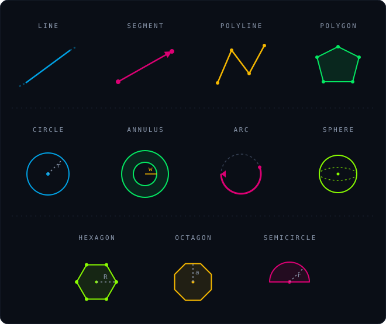
#![allow(unused)]
fn main() {
use smearor_commons_geometry::{Annulus, Circle, Polygon, Segment, Vec2};
let circle: Circle = Circle::new(Vec2::new(50.0, 50.0), 20.0);
let ring: Annulus = Annulus::new(Vec2::new(50.0, 50.0), 12.0, 20.0);
let edge: Segment = Segment::new(Vec2::new(0.0, 0.0), Vec2::new(100.0, 60.0));
}Line & Segment
Line<U> is the infinite line through origin along direction;
Segment<U> is the bounded variant between from and to — and the
far richer API, since touch traces, edges and rays on a tabletop are
almost always bounded.
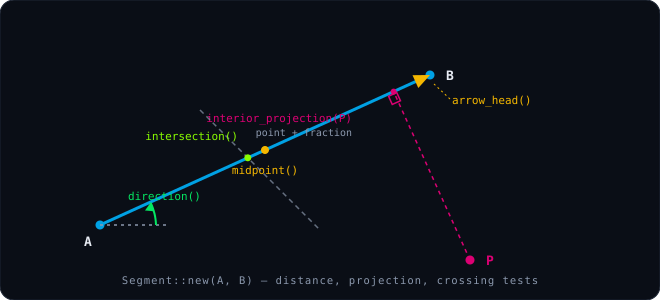
| Method | Returns |
|---|---|
midpoint() | the center Vec2<U> |
direction() | heading as RotationRad |
bounding_box() | the enclosing Rect<U> |
interior_projection(p) | Projection { point, fraction }, None off the ends |
interior_distance(p) | Option<U> — distance when the projection lands inside |
nearest(p) | closest point incl. the end caps |
distance(p) | U — always defined |
crosses(other) / crossing_point(other) / intersection(other) | boolean / point variants of the crossing test |
arrow_head(head, half_span) | a Polygon<U> triangle — ready-made arrowheads for direction cues |
param_on_line(anchor, axis) | parameter along an arbitrary axis |
Projection<U> (also exported) carries the fraction along the
segment — 0.0 at from, 1.0 at to, deliberately unclamped — plus
the projected point itself.
Polyline
Polyline<U> is an open vertex list — a touch trace, a drag path, a
wire run. It iterates segments(), tests crosses() against other
polylines, and processes paths:
smoothed(rounds, pinned)— Chaikin-style corner cutting, withpinnedvertex indices kept fixedresampled(count)— even arc-length resamplingoffset(distance)— a parallel copy, e.g. for stroke outlinesarc_length(at)/nearest_segment(p)/axis_param(...)— measuring along and against the pathsmoothed_anchored(anchors, within, rounds)— smoothing that snaps nearby vertices onto anchor points (magnetic endpoints)
Polygon
Polygon<U> is the closed variant — last vertex connects back to the
first. Containment (contains, contains_or_touches), centroid,
bounding_box, is_simple (self-intersection test), crossed by a
segment, overlaps another vertex list.
The Millimeters specialization adds tabletop-specific queries:
signed_area() → SquareMillimeters, chord(point, axis) — the cut
of a line through the body — and deepest_point /
deepest_point_avoiding(others) for placing labels inside an irregular
region away from obstacles. offset(distances) grows or shrinks each
edge individually.
#![allow(unused)]
fn main() {
use smearor_commons_geometry::{Polygon, Segment, Vec2};
let table_zone: Polygon = Polygon::new(vec![
Vec2::new(0.0, 0.0),
Vec2::new(300.0, 0.0),
Vec2::new(280.0, 180.0),
Vec2::new(20.0, 180.0),
]);
if table_zone.contains(&Vec2::new(150.0, 90.0)) {
// point inside the play area
}
}Circle & Annulus
Circle<U, T> stores center + radius. Beyond contains/overlaps/
bounding_box, it exposes both unit-typed accessors (radius_unit,
diameter, circumference) and f64 bridges (diameter_f64,
circumference_f64) — so the same type serves mm-precise surface math
and framework float APIs. area::<P>() is generic over the return
type.
Annulus<U, T> is a ring: center, inner, outer radii. width
(ring thickness), mid_radius, contains (inside the outer, outside
the inner), and inner_circle/outer_circle views. A radial gauge
track or a ring-shaped touch zone is an Annulus.
Both rasterize — see Rasterization.
Arc
Arc is an angular interval, not a spatial one — it is not generic
over U because it lives on the circle of directions:
#![allow(unused)]
fn main() {
use smearor_commons_geometry::{Arc, RotationRad};
let wedge = Arc::new(RotationRad::from_degrees(30.0), RotationRad::from_degrees(60.0));
wedge.contains(RotationRad::from_degrees(45.0)); // true
wedge.end(); // 90°
wedge.midpoint(); // 60°
wedge.at(smearor_commons_geometry::Fraction::HALF); // parameter → direction
}Arc::spanning(from, to) computes the interval between two
directions; Arc::gaps_between(&[RotationRad]) returns the angular
holes between sorted directions — used e.g. to find free angular slots
around a dial.
Sphere & friends
Sphere<U, T>—Vec3center + radius; pairs withCamera(yaw/pitch/scale) for 3D-to-screen projection.Corners<U>— the four corners of a rect as named fields (top_left, …),into_array()for iteration.Barycentric— normalized triangle weights; inside-test via non-negativity.
Quantities
Scalar newtypes that make what kind of number part of the type:
progress fractions, angles, ratios, smoothing factors. All are
Copy, serde-transparent, and several understand FromStr/Display.
Fraction — progress and blends
Fraction(pub f64) is a progress value — deliberately not clamped:
#![allow(unused)]
fn main() {
use smearor_commons_geometry::Fraction;
let t = Fraction::new(0.5); // Fraction::HALF
t.clamped(); // squeeze into 0.0..=1.0
t.inverse(); // 1 - t
}Animations may extrapolate past 1.0 (an overshoot easing); each
consumer decides what out-of-range values mean. clamped() is the
explicit opt-in for the closed interval.
RotationRad — continuous angles
RotationRad(pub Radians) is the continuous angle. Everything
directional in the crate — Vec2::direction, Segment::direction,
Arc, transforms — speaks RotationRad, so there is never a
degrees/radians mix-up at a call site.
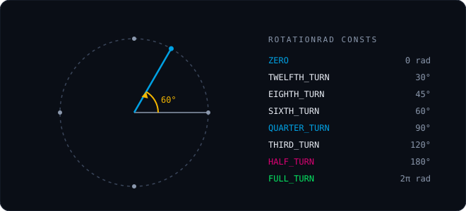
#![allow(unused)]
fn main() {
use smearor_commons_geometry::RotationRad;
let angle = RotationRad::from_degrees(45.0); // or RotationRad::EIGHTH_TURN
let normalized = angle.rotated_degrees(400.0).normalized(); // back into [-π, π)
let delta = angle.signed_delta_to(RotationRad::QUARTER_TURN); // shortest signed step
let smoothed = RotationRad::ema(old, new, alpha); // angular EMA — handles wraparound
}Beyond conversion (to_degrees, degrees(), radians(), as_f64,
sin_cos) it knows about axis angles: axis() folds a direction
onto the unoriented axis (0..π), axis_delta_to gives the shortest
axis delta — for elements where 0° and 180° mean the same thing
(e.g. an unrotated card back).
QuarterTurn — snapped orientation
QuarterTurn is the discrete enum Deg0 | Deg90 | Deg180 | Deg270 —
exactly the four orientations a tabletop card can readably face.
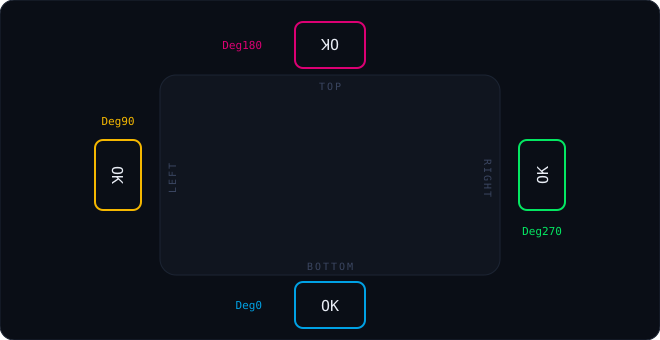
#![allow(unused)]
fn main() {
use smearor_commons_geometry::QuarterTurn;
let turn = QuarterTurn::Deg90;
turn.clockwise(); // Deg180
turn.counter_clockwise(); // Deg0
turn.inverse(); // Deg270
turn.swaps_axes(); // true — width and height trade places
turn.degrees(); // 90.0
turn.to_rotation_rad(); // continuous form
QuarterTurn::ALL; // [Deg0, Deg90, Deg180, Deg270]
}Snapping helpers: snap_zone(angle) returns the nearest quarter turn,
snap_target(angle, direction) the next quarter turn in a given
direction — the difference between “where would it settle” and “which
way is it spinning”. from_degrees/from_rotation_rad return Option
since only exact multiples of 90° qualify.
apply(pos, bounds) maps a point through the quarter turn inside
bounds — the coordinate math every tabletop needs when content is
re-oriented for another seat.
Rotation — snapped or free
Rotation is the union enum for values that are usually a quarter
turn but sometimes continuous — e.g. a card mid-spin:
#![allow(unused)]
fn main() {
use smearor_commons_geometry::{QuarterTurn, Rotation, RotationRad};
let r = Rotation::from_degrees(90.0); // Rotation::QuarterTurn(Deg90) — snapped
let f = Rotation::from_degrees(45.0); // Rotation::Free(RotationRad) — continuous
let q = Rotation::quantized(RotationRad::from_degrees(179.9)); // nearest snap
r.quarter_turn(); // Some(Deg90)
f.quarter_turn(); // None
r.is_snapped(); // true
}RotationDirection
RotationDirection::{Clockwise, CounterClockwise} — with
RotationDirection::of(delta) mapping a signed Degrees change to a
direction (None for zero) and step(turn) advancing a QuarterTurn
one step along it.
AspectRatio, ScaleFactor, SmoothingAlpha
AspectRatio— width/height ratio;newrejects non-positive input withOption, and consts cover the usual suspects (SIXTEEN_NINE,FOUR_THREE,ISO_PAPER,GOLDEN, …).Vec2::aspect()derives one.ScaleFactor(pub f64)— a zoom factor;Camerauses it for screen-pixels-per-world-unit.SmoothingAlpha— the EMA weight;is_effective()tells whether it actually smooths,complement()is1-α, andfrom_frame_time(frame_time, tau)derives the per-frame alpha from a time constant — the physics ofRotationRad::ema/Vec2smoothing.
Units
The U parameter of Vec2<U, T> / Rect<U, T> is a zero-cost phantom
marker — no runtime data, just a type-level tag that keeps coordinate
spaces apart. Vec2<Millimeters> and Vec2<Pixels> are different
types; you cannot silently add millimeters to pixels.
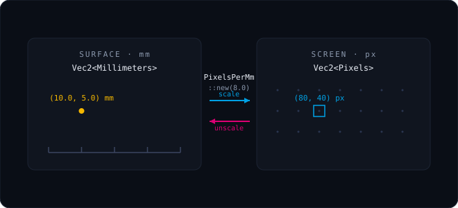
The scalar units
| Unit | Meaning |
|---|---|
Millimeters | physical surface distance — the canonical space for tabletop content |
Pixels<T> | screen/buffer distance; generic over the backing scalar (f64, f32, u32, i32) |
SquareMillimeters | area in mm² |
Degrees | angle in degrees (human-facing: CLI args, config files) |
Radians | angle in radians (math-facing) |
DegreesPerPixel | angular velocity — e.g. flick-to-spin speeds |
#![allow(unused)]
fn main() {
use smearor_commons_geometry::{Degrees, Millimeters, Pixels};
let card_width = Millimeters::new(63.0); // a poker card
let border = Pixels::new(2.0f64); // a 2-px stroke
let tolerance = Degrees::new(5.0); // snap tolerance
}The newtypes wrap plain scalars (serde(transparent) on the wire) and
carry as_raw/as_f64/as_f32 bridges plus min/max/clamp/
abs helpers where useful.
Bridging spaces: PixelsPerMm & UnitsPerMm
PixelsPerMm(pub f64) is the scale between the physical surface and
the framebuffer — set once from DPI/surface calibration, then applied
everywhere:
#![allow(unused)]
fn main() {
use smearor_commons_geometry::{Millimeters, Pixels, PixelsPerMm, Vec2};
let scale = PixelsPerMm::new(8.0);
scale.scale(Millimeters::new(10.0)); // → Pixels(80.0)
scale.scale_vec(Vec2::<Millimeters>::new(10.0, 5.0)); // → Vec2<Pixels>(80, 40)
// the hit-testing direction: widget geometry → surface coordinates
scale.unscale(Pixels::new(80.0)); // → Millimeters(10.0)
// the hairline convention: never below the floor
scale.scale_at_least(Millimeters::new(0.05), Pixels::new(1.0)); // → Pixels(1.0)
}UnitsPerMm does the same job for a custom game unit — e.g. “hexes
per millimeter” on a board that is neither mm nor px.
Tagging and untagging vectors
U is a marker, not a value — Vec2 offers with_unit::<V>() to
re-tag when crossing a boundary, and x_unit()/y_unit()/splat() to
manufacture unit values. The erased forms Vec2<(), T> (Position,
Size, Rectangle aliases) pick the unit up at the boundary:
Vec2::from_mm(x, y) and Vec2::from_px(x, y) construct tagged
vectors straight from unit scalars.
Grid
Grid partitions an extent into cols × rows equal cells. The grid
itself is unit-free — pure integer index bookkeeping, like a field
number on a chess board — and resolves to real Rects only when you
hand it a Vec2<U, T> extent.
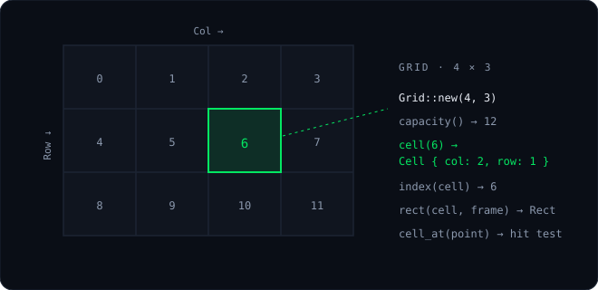
#![allow(unused)]
fn main() {
use smearor_commons_geometry::{Cell, Col, Grid, Row};
let grid = Grid::new(4, 3); // 4 columns × 3 rows
grid.capacity(); // 12
grid.cell(6); // Some(Cell { col: 2, row: 1 })
grid.index(Cell::new(Col(2), Row(1)));// Some(6)
Grid::for_items(10, 4); // enough rows for 10 items at 4 cols
}Col and Row are distinct newtypes — swapping column and row is a
compile error, not a silent transpose.
Resolving cells to geometry
Give the grid an extent and it hands back geometry in that space:
#![allow(unused)]
fn main() {
use smearor_commons_geometry::{Cell, Col, Grid, Pixels, Rect, Row, Vec2};
let grid = Grid::new(4, 3);
let frame: Vec2<Pixels> = Vec2::new(800.0, 600.0);
grid.cell_size(frame); // one cell: 200×200 px
grid.rect(Cell::new(Col(2), Row(1)), frame); // the cell's Rect<Pixels>
// hit testing: which cell did the touch land in?
let bounds: Rect<Pixels> = Rect::from_xywh(0.0, 0.0, 800.0, 600.0);
grid.cell_at(Vec2::new(250.0, 150.0), bounds); // Some(Cell { col: 1, row: 0 })
grid.index_at(Vec2::new(250.0, 150.0), bounds); // Some(1)
}rect_within(cell, frame) does the same as rect against a Rect
frame instead of a bare extent; integer extents leave the division
remainder unassigned at the right/bottom edge rather than drifting
cells.
Rotating the board
Grid::rotated(turn) returns the grid as seen after a quarter turn —
odd turns swap cols and rows — and Cell::rotated(turn, &grid) /
Grid::rotate_cell map each cell into the rotated frame:
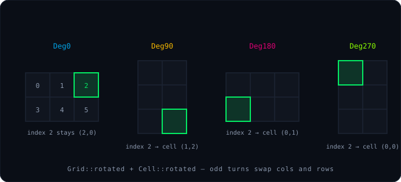
#![allow(unused)]
fn main() {
use smearor_commons_geometry::{Cell, Col, Grid, QuarterTurn, Row};
let grid = Grid::new(3, 2);
let rotated = grid.rotated(QuarterTurn::Deg90); // becomes 2×3
grid.rotate_cell(QuarterTurn::Deg90, Cell::new(Col(2), Row(0)));
// → Cell { col: 1, row: 2 } — valid inside `rotated`
}Pair the two: cell.rotated(turn, grid) always addresses into
grid.rotated(turn). This is how a board layout survives being
re-oriented for a player on another table edge — the indices of the
game state never change, only the frame they are drawn in.
Transforms
Least-squares fits between two corresponding point sets — the
workhorse for multi-touch manipulation. Put N fingers on an object,
store their baseline positions, and each frame fit the transform
that maps baseline → current.
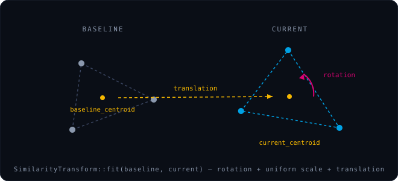
RigidTransform — rotate + translate only
RigidTransform<U> fits rotation and translation with scale fixed at
1 — the rigid motion of an object that must not change size:
#![allow(unused)]
fn main() {
use smearor_commons_geometry::{RigidTransform, Vec2};
let baseline = [Vec2::new(0.0, 0.0), Vec2::new(100.0, 0.0), Vec2::new(50.0, 80.0)];
let current = [Vec2::new(20.0, 40.0), Vec2::new(120.0, 40.0), Vec2::new(70.0, 120.0)];
if let Some(rigid) = RigidTransform::fit(&baseline, ¤t) {
let moved_anchor = rigid.apply(Vec2::new(50.0, 40.0)); // baseline space → current space
}
}Fields: rotation (RotationRad), baseline_centroid,
current_centroid — apply rotates around the centroids, so the
transform is “carry the baseline centroid to the current centroid,
rotating around it”.
SimilarityTransform — plus uniform scale
SimilarityTransform<U> adds a uniform scale: Fraction — pinch
gestures. The fit is closed-form: each corresponding pair votes for the
angle weighted by its squared centroid distance, and the scale is the
RMS-radius ratio.
#![allow(unused)]
fn main() {
use smearor_commons_geometry::{Fraction, RotationRad, SimilarityTransform, Vec2};
// or construct directly — e.g. a camera preset:
let zoom = SimilarityTransform::about(
Vec2::new(400.0, 300.0), // pivot
RotationRad::from_degrees(15.0), // rotation
Fraction::new(1.25), // +25% scale
);
}Both fits return Option: None on length mismatch or empty input.
A degenerate baseline (all points coincident) cannot determine rotation
or scale — RotationRad::ZERO / Fraction::ONE are substituted so
apply still reproduces the centroid translation. One-finger drags
therefore Just Work.
CenteredTransform (feature gtk4)
CenteredTransform packages center: Position<f32> +
child_size: Size<f32> + rotation: RotationRad +
scale: ScaleFactor — the parameter block GSK needs to rotate/scale a
widget around its own center rather than a global pivot.
Rasterization
Analytic shapes describe the ideal geometry; rasterization turns them into the integer strip/rect decompositions that renderers and damage trackers actually consume.
Circle → region_rects
Circle::region_rects() decomposes the disc into a Vec<Rect<U, i32>>
of 1-px-high horizontal strips — the integer-pixel coverage of the
circle:
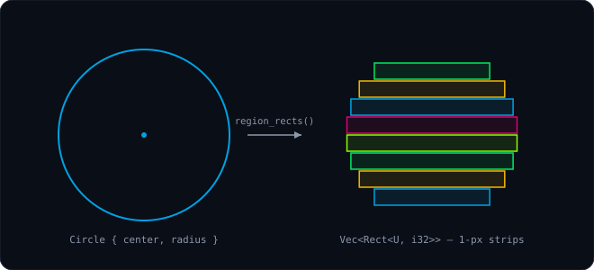
#![allow(unused)]
fn main() {
use smearor_commons_geometry::{Circle, Vec2};
let disc: Circle = Circle::new(Vec2::new(100.0, 100.0), 40.0);
let strips = disc.region_rects(); // Vec<Rect<(), i32>> around the center
// feature "cairo": disc.region() -> Result<cairo::Region, cairo::Error>
}Behind the cairo feature, Circle::region() produces the same
coverage as a cairo::Region — ready for region.intersect_*
operations and set_clip_region.
Rotated Rect → Scanline strips
Rect::rotated_region_scanlines(rotation) answers a subtler question:
which pixels does a rotated rectangle cover? It decomposes the
rotated outline into Scanline { y, x_start, x_end } runs — y and the
x extents relative to the rect’s center:
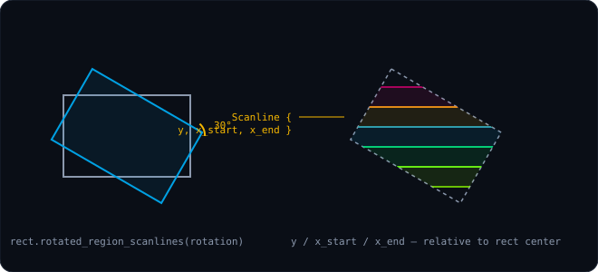
#![allow(unused)]
fn main() {
use smearor_commons_geometry::{Pixels, Rect, RotationRad};
let card: Rect<Pixels> = Rect::from_xywh(0.0, 0.0, 140.0, 90.0);
let strips = card.rotated_region_scanlines(RotationRad::from_degrees(30.0));
for strip in strips {
// strip.y — scanline offset from the rect center
// strip.x_start..x_end — covered x range on that line (inclusive)
// strip.width() — run length in pixels
}
}This is the damage-region primitive: repaint or invalidate exactly the
pixels a rotated card covers, instead of its (much larger) axis-aligned
bounding box — the same representation cairo::RectangleInt-style
integer regions use.
Where it plugs in
The drawing crate consumes these decompositions when it rasterizes
into smearor-commons-buffer views: filled circles blit strip by
strip, rotated fills walk scanlines — no floating-point edges reach the
framebuffer.
smearor-commons-color
Channel-generic Color<T> (normalized f64/f32 and byte u8) with
hex FromStr/Display, alpha handling and consolidated operations —
plus alternate color spaces, classic color-order systems, three named
vocabularies and a complete palette layer.
One type, many doors in
Color<T> is the single currency: u8 for wire and buffer work,
f64/f32 for math. Around it the crate layers everything a color
pipeline needs:
- Representations — the three channel
types, the
#rgb/#rrggbb/#rrggbbaahex grammar,HexColorandParseColorError. - Color Spaces —
Hsl,Hsv,Cmyk,Xyz,LabandHue, connected byFromconversions (Lab viaXyz). - Components — the channel newtypes
Alpha,AlphaPercent,Saturation,Lightness,Value,Luminance,LuminanceWeights,LabLightness. - Operations —
lerp,lighten,brighten,luminance/_601/_709,with_min_luminance,alpha_over,with_alpha,fade,normalized,clamp. - Color Systems —
Ncs/NcsHue,Ostwald, theMUNSELL_SAMPLESatlas,SPECTRAL_LOCUS/PLANCKIAN_LOCUSchromaticity tables. - Named Colors —
CssNamedColor(148 keywords),PantoneNamedColor(PMS +to_cmyk/nearest/counterpart),PantoneFhiNamedColor(2310 FHI swatches) and the dynamicNamedColorkey. - Palettes —
Palette<N, T>name→color maps,palette_definition!/static_palette!macros,PaletteBuilder,StaticPalette— with completeness checks on enum vocabularies. - Decades — all 89 curated palettes of
“Pantone: The Twentieth Century in Color” as
consts, visualized.
classDiagram
class Color~T~ {
+from_str(hex)
+lerp(other, t)
+luminance_709()
}
class PaletteDefinition {
<<trait>>
+slots()
+name()
}
class Palette~N, T~ {
+get(name)
+insert(name, color)
+missing()
+is_complete()
}
class StaticPalette~N, T~ {
<<const>>
}
Palette o-- Color~T~
Palette ..> PaletteDefinition : N
StaticPalette --> Palette : converts
Feature gates: cairo and gtk4 bridge Color into cairo source
calls and gdk::RGBA; schemars/async-graphql/zbus add schema
derives where they fit. See the crate’s rustdoc for the full API.
Representations
Color<T> is one struct — r, g, b, a channels — parameterized
by the channel scalar T. Three instantiations cover every use case:
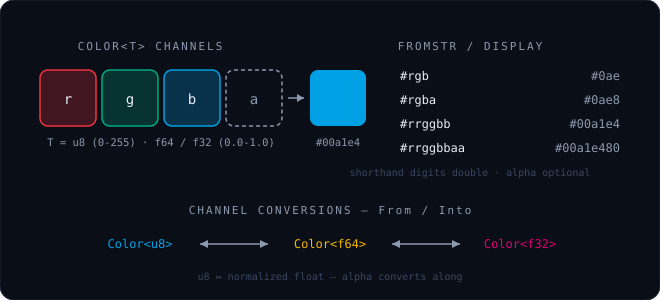
| Type | Range | Role |
|---|---|---|
Color<u8> | 0-255 per channel | the canonical wire/render form — buffers, hex, Pantone lookups |
Color<f64> | 0.0-1.0 normalized | math space — lerp, luminance, space conversions compute here |
Color<f32> | 0.0-1.0 normalized | the GPU/framework flavor of the same |
#![allow(unused)]
fn main() {
use std::str::FromStr;
use smearor_commons_color::Color;
let byte = Color::<u8>::new(0x00, 0xa1, 0xe4);
let rgba = Color::<u8>::new_rgba(0x00, 0xa1, 0xe4, 0x80);
let packed = Color::<u8>::from_rgb_u32(0x00a1e4);
let float: Color<f64> = byte.into(); // lossless normalization
let back: Color<u8> = float.into(); // scales + rounds back
}All From conversions convert alpha along, and [u8; 4] arrays
convert in both directions for framebuffer interop. Default is
opaque black for all three channel types.
Text form: HexColor
FromStr and Display speak a single grammar on every channel type:
#![allow(unused)]
fn main() {
use std::str::FromStr;
use smearor_commons_color::Color;
let c = Color::<u8>::from_str("#00a1e4")?; // 6-digit
let s = Color::<u8>::from_str("#0ae")?; // shorthand — digits double
let a = Color::<u8>::from_str("#00a1e480")?; // explicit alpha
c.to_string(); // "#00a1e4" — alpha emitted only when non-opaque
}HexColor is the strict newtype wrapper around Color<u8> for APIs
that take a stringly color — it validates on construction and its
serde is lenient on read: a CssNamedColor keyword ("red",
"transparent") also deserializes into the matching hex value.
Errors: ParseColorError
One thiserror enum covers every parser in the crate and says why:
- hex syntax:
MissingHashPrefix,InvalidDigitCount,InvalidHexDigit - vocabulary:
UnknownNamedColor,UnknownPantoneColor,UnknownPantoneSuffix,UnknownPantoneFhiColor,UnknownPantoneFhiSuffix - catch-all
InvalidColorwhenColor’sFromStrmatches neither grammar
Every variant keeps the offending input, and input() exposes it for
diagnostics.
Color Spaces
Color<T> stores plain sRGB. Alternate spaces are small structs with
From/Into conversions — convert, manipulate, convert back.
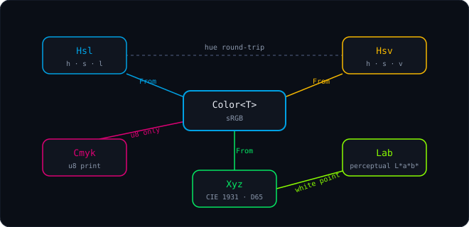
Hsl & Hsv — the cylindrical pair
#![allow(unused)]
fn main() {
use smearor_commons_color::{Color, Hsl, Hsv};
let blue: Hsl = Color::<u8>::new(0x00, 0xa1, 0xe4).into();
let desaturated = Hsl::new(blue.h, blue.s.as_f64() * 0.5, blue.l);
let rgb: Color<u8> = desaturated.into();
let hsv: Hsv = blue.into(); // Hsl ↔ Hsv both ways
}Hsl { h, s, l } puts pure hues at l = 0.5 (0 black, 1 white);
Hsv { h, s, v } puts them at v = 1. Both round-trip through the
standard sRGB transforms; Display renders the hsl(h, s%, l%) /
hsv(...) notation.
Cmyk — print output
Cmyk { c, m, y, k } in u8 — the naive device conversion for print
pipelines, u8-only (From<Color<u8>> both ways). Pantone swatches
with published print values bypass the naive path: see
PantoneNamedColor::to_cmyk.
Xyz — the hub
Xyz { x, y, z } is CIE 1931 XYZ — the interchange every other space
hangs off. From<Color<u8>>/Color<f64> performs the linearized sRGB
matrix; named white points ship as consts:
#![allow(unused)]
fn main() {
use smearor_commons_color::{Color, Xyz};
let xyz: Xyz = Color::<u8>::new(0xdc, 0x00, 0x73).into();
let (x, y, _) = xyz.to_xyy(); // chromaticity + luminance
let d50 = xyz.adapted(Xyz::WHITE_D65, Xyz::WHITE_D50); // white adaptation
}WHITE_D65, WHITE_D50, WHITE_C cover the standard illuminants;
Xyz::from_xyy rebuilds a tristimulus from chromaticity coordinates —
exactly what SPECTRAL_LOCUS and MunsellSample
provide.
Lab — perceptual space
Lab { l, a, b } is CIELAB: l is LabLightness (0-100), a/b
the opponent axes. Conversion needs a reference white:
#![allow(unused)]
fn main() {
use smearor_commons_color::{Color, Lab, Xyz};
let lab: Lab = Color::<u8>::new(0xdc, 0x00, 0x73).into(); // D65 by default
let lch = (lab.chroma(), lab.hue()); // cylindrical view
let back: Color<u8> = lab.into();
}from_xyz(xyz, white)/to_xyz(white) accept the illuminant
explicitly; the Color impls pick WHITE_D65. chroma() and hue()
give the LCh view — perceptual distance and hue angle without a
dedicated type.
Hue
Hue(f64) is the shared degree newtype all cylindrical spaces use —
Hue::new wraps freely into 0-360. It is also what Ostwald,
NcsHue::lab_hue and MunsellSample::hue_angle produce.
Components
Scalar channel newtypes — each owns one concept, converts from f64 /
u8 where it fits, and stays serde(transparent) on the wire.
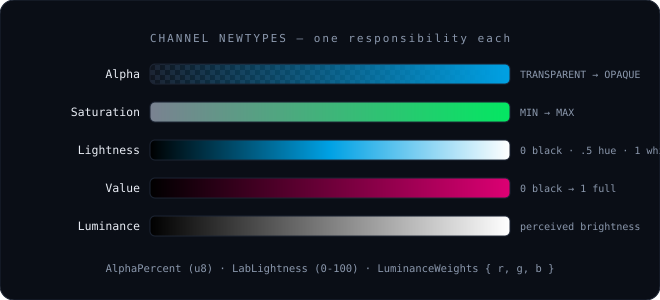
Alpha & AlphaPercent
Alpha(f64) is the opacity channel 0.0-1.0 with
TRANSPARENT/OPAQUE consts and bridges to both float and byte
representations:
#![allow(unused)]
fn main() {
use smearor_commons_color::{Alpha, AlphaPercent};
let half = Alpha::new(0.5);
half.as_u8(); // 128
Alpha::from_percent(50); // same thing
half.percent(); // 50
half.is_transparent(); // false
let p = AlphaPercent::new(50); // the integer-percent twin (u8)
p.as_f64(); // 0.5
}AlphaPercent(pub u8) exists for config formats and protocols that
speak integer percents — 0-100, OPAQUE = 100.
Saturation, Lightness, Value
The three Hsl/Hsv channels, all 0.0-1.0 with MIN/MAX consts:
Saturation—0gray to1full chroma (shared by both spaces)Lightness—0black,0.5pure hue,1white (HSL axis)Value—0black to1full brightness (HSV axis)
#![allow(unused)]
fn main() {
use smearor_commons_color::{Hsl, Saturation};
let muted = Hsl::new(200.0, Saturation::new(0.4), 0.6);
}Hue
Hue(f64) — degrees on the color circle, wrapping on construction.
From<f64>/Into<f64> both ways, used by Hsl, Hsv, Ostwald,
Ncs and the Lab::hue view.
Luminance & LuminanceWeights
Luminance(f64) is perceived brightness 0-1. Color::luminance
takes a LuminanceWeights — the channel triple w_r, w_g, w_b — so
the standard is a value, not hard-coded:
#![allow(unused)]
fn main() {
use smearor_commons_color::{Color, LuminanceWeights};
let brand = Color::<u8>::new(0xdc, 0x00, 0x73);
brand.luminance(LuminanceWeights::REC_709); // HDTV weights
brand.luminance_709(); // same, shorthand
brand.luminance_601(); // legacy SDTV weights
}REC_709 (0.2126 / 0.7152 / 0.0722) is the modern default;
REC_601 (0.299 / 0.587 / 0.114) stays for parity with legacy
tooling.
LabLightness
LabLightness(f64) — the L* axis 0-100 (ZERO, WHITE,
clamped()). Kept separate from Lightness on purpose: same word,
different scale.
Operations
The consolidated color math lives on Color<T> itself — same method
names on all three channel types, computing in the natural precision
of each.
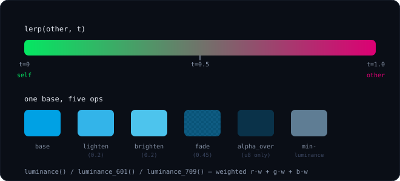
Interpolation & brightness
#![allow(unused)]
fn main() {
use smearor_commons_color::Color;
let a = Color::<u8>::new(0x04, 0xe7, 0x62);
let b = Color::<u8>::new(0xdc, 0x00, 0x73);
let mid = a.lerp(&b, 0.5); // channel-wise blend
let lighter = a.lighten(0.3); // shift toward white
let brighter = a.brighten(0.2); // add to every channel
}lerp(other, t) blends per channel (t unclamped — overshoot
interpolates past the target). lighten(factor) moves toward white by
a fraction of the remaining headroom; brighten(amount) adds an
absolute offset — the difference shows on already-bright colors.
Luminance-aware ops
#![allow(unused)]
fn main() {
use smearor_commons_color::{Color, Luminance};
let ink = Color::<u8>::new(0x8b, 0x98, 0xad);
let legible = ink.with_min_luminance(Luminance::new(0.4)); // lift until readable
ink.luminance_709(); // perceived brightness
}with_min_luminance brightens the color just enough — for text and
icons that must stay legible on dark surfaces without a hand-picked
fallback.
Alpha ops
#![allow(unused)]
fn main() {
use smearor_commons_color::{Alpha, Color};
let ghost = Color::<u8>::new(0x00, 0xa1, 0xe4).fade(0.4); // scale alpha
let solid = ghost.with_alpha(Alpha::OPAQUE); // set alpha
let blend = Color::<u8>::new(0xdc, 0x00, 0x73).alpha_over(&solid, 0.5); // composite
}with_alpha sets the channel, fade multiplies it. alpha_over is
the byte-space composite — source over destination with an explicit
strength — used by the buffer crate’s software rasterizer.
Normalization & distance
normalized()— scalesf64/f32channel values outside0.0-1.0back into rangeclamp()— hard-clamps every channel (no rescale)squared_rgb_distance(&other)—u32squared RGB distance, the cheap metric behindPantoneNamedColor::nearest/PantoneFhiNamedColor::nearest
Cross-type conversion as an operation
From between Color<u8> ↔ Color<f64>/f32 is how most
“operations” are structured: promote to f64 for math, demote back
to u8 for storage — normalization and rounding handled for you.
Color Systems
Beyond raw RGB, the crate models three classic color-order systems — each with its own notation, its own geometry, and a documented approximation of the official atlas where the originals are proprietary.
NCS — Natural Color System
NCS describes a color as blackness + chromaticness + a hue on the
elementary circle Y → R → B → G (0 = yellow, 100 = red,
200 = blue, 300 = green — the position is the percentage walk
toward the next elementary hue).
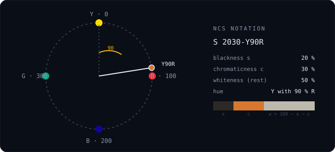
#![allow(unused)]
fn main() {
use smearor_commons_color::{Ncs, NcsHue};
let hue = NcsHue::new(90.0); // Y90R — 90% from yellow toward red
let color = Ncs::new(hue, 20.0, 30.0); // "S 2030-Y90R"
color.whiteness(); // 50.0 — the remainder
let rgb = color.color(); // Color<u8> via CIELAB anchors
}The mapping is a documented approximation: official NCS atlas values
are proprietary, so color() maps hue onto CIELAB angles between the
four elementary anchors and blackness/chromaticness onto L*/C*.
Geometry and notation are the real NCS ones.
Ostwald — the pigment triangle
Ostwald models a color as a mixture: v full color + w white +
s black, constrained to v + w + s = 1. Every hue is a triangle;
every color a point inside it.
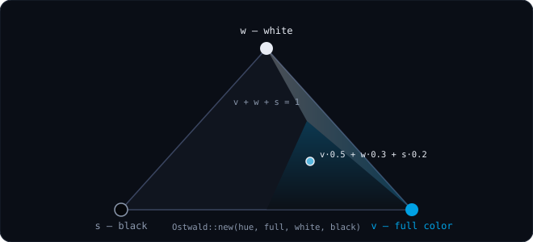
#![allow(unused)]
fn main() {
use smearor_commons_color::{Hue, Ostwald};
let mixed = Ostwald::new(Hue::new(200.0), 0.5, 0.3, 0.2);
let rgb = mixed.color(); // idealized linear sRGB mixture
let pure = Ostwald::full_color(Hue::new(200.0)); // the vertex itself
}Munsell — the atlas
MUNSELL_SAMPLES is the published Munsell renotation dataset — 2734
samples with the real hue/value/chroma notation and their CIE x,
y chromaticities (illuminant C). The three axes organize the atlas:
hue steps around 10 sectors (R YR Y GY G BG B PB P RP), value climbs
1-9 dark to light, chroma grows outward from the neutral axis — the
classic “Munsell page” per hue:
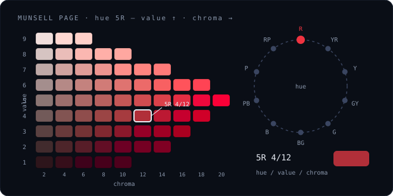
#![allow(unused)]
fn main() {
use smearor_commons_color::{MunsellSample, MUNSELL_SAMPLES};
let sample = MunsellSample::find("5R", 4.0, 12.0).copied();
sample.map(|s| (s.notation(), s.hue_angle(), s.to_color())); // "5R 4/12", Hue, sRGB
MunsellSample::neutral(5.0); // a gray at value 5
}MunsellSample also exposes to_xyz() — the real measurement path
through Xyz::from_xyy.
Chromaticity tables
Two standard-observer datasets ship as static tables for anyone reimplementing colorimetry:
SPECTRAL_LOCUS—(wavelength_nm, x, y)monochromatic boundary of the CIE 1931 chromaticity diagramPLANCKIAN_LOCUS—(kelvin, x, y)blackbody chromaticities, 1000 K to 20000 K in 100 K steps — white-point math for warm/cool lighting
Named Colors
Three closed vocabularies ship as fieldless enums — every name is a
variant, every variant knows its sRGB value, and FromStr/Display
speak the canonical notation.
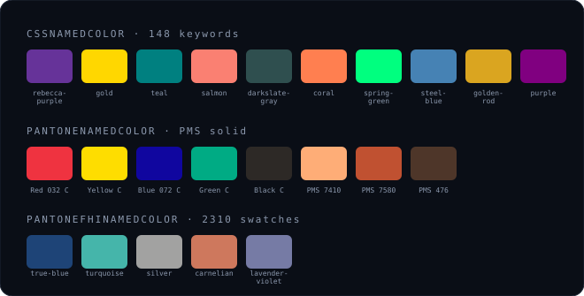
CssNamedColor — the web keywords
All 148 CSS Color Level 4 keywords (rebeccapurple, darkslategray,
transparent, …):
#![allow(unused)]
fn main() {
use std::str::FromStr;
use smearor_commons_color::CssNamedColor;
let c = CssNamedColor::from_str("teal")?; // case-insensitive
c.as_str(); // "teal"
c.to_color(); // Color<u8> #008080
CssNamedColor::ALL; // the full keyword list
}PantoneNamedColor — the PMS ink catalog
The Pantone Matching System solid colors — numbered inks with
substrate suffixes C coated, U uncoated, M matte:
#![allow(unused)]
fn main() {
use std::str::FromStr;
use smearor_commons_color::PantoneNamedColor;
let red = PantoneNamedColor::from_str("Pantone 485 C")?;
red.to_color(); // approximate sRGB
red.to_cmyk(); // Option<Cmyk> — published print values where known
red.suffix(); // PantoneSuffix::Coated
red.counterpart(); // the same ink on another substrate, if it exists
PantoneNamedColor::nearest(&color); // closest catalog match to any color
}FromStr accepts the canonical Pantone <num> <suffix> form plus
lenient variants; nearest(&Color<u8>) does a squared-RGB-distance
lookup over ALL — the bridge from arbitrary input to “which Pantone
is that”.
PantoneFhiNamedColor — Fashion, Home + Interiors
The FHI vocabulary: 2310 colors addressed by NN-NNNN code and name
(Pantone 19-4057 TCX True Blue). Suffixes describe the substrate:
TCX cotton (canonical), TPX paper (discontinued), TPG current
paper guide — PantoneFhiSuffix::{Cotton, Paper, PaperGreen}.
#![allow(unused)]
fn main() {
use std::str::FromStr;
use smearor_commons_color::PantoneFhiNamedColor;
let blue = PantoneFhiNamedColor::from_str("19-4057")?; // bare code
let same = PantoneFhiNamedColor::from_str("True Blue")?; // bare name
blue.to_color(); // sRGB approximation
blue.counterpart(); // across substrates
}The stored sRGB values are community approximations of the physical swatches — indicative, not authoritative. (PANTONE is a trademark of Pantone LLC.)
NamedColor — the open key
NamedColor(Cow<'static, str>) is the dynamic palette key for
vocabularies that aren’t fixed at compile time — user-defined slot
names, theme files, wire names:
#![allow(unused)]
fn main() {
use smearor_commons_color::NamedColor;
let key = NamedColor::new("brand-primary");
key.as_str();
}It deliberately does not implement PaletteDefinition — dynamic
keys get palette lookups, not compile-time completeness checks.
Palettes
A Palette<N, T> maps names to colors: semantic slots on the left,
Color<T> values on the right. The key type N decides how much
safety you get.
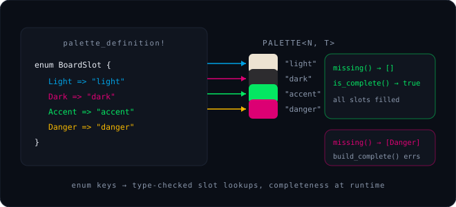
Defining a vocabulary: palette_definition!
#![allow(unused)]
fn main() {
use smearor_commons_color::{palette_definition, PaletteDefinition};
palette_definition! {
/// Colors of a chess board theme.
pub enum BoardSlot {
/// Light squares.
Light => "light",
/// Dark squares.
Dark => "dark",
/// Highlights and accents.
Accent => "accent"
}
}
}The macro generates the fieldless enum plus its PaletteDefinition
impl: slots() (all variants in order) and name() (the wire string).
Derived: Copy, Hash, serde — variants serialize as their names.
Filling it: Palette / PaletteBuilder
#![allow(unused)]
fn main() {
use smearor_commons_color::{Color, Palette};
let mut palette = Palette::builder()
.color(BoardSlot::Light, Color::<u8>::new(0xed, 0xe3, 0xd2))
.color(BoardSlot::Dark, Color::<u8>::new(0x2d, 0x2c, 0x2f))
.build();
palette.missing(); // [Accent]
palette.is_complete(); // false
palette.insert(BoardSlot::Accent, Color::<u8>::new(0x04, 0xe7, 0x62));
palette.get(&BoardSlot::Accent); // Some(&Color)
palette.get_or(&BoardSlot::Accent, Color::<u8>::default()); // fallback lookup
palette.ordered(); // iterates in declaration order
}build() never fails — incomplete is a legal runtime state.
build_complete() returns Result<_, PaletteBuildError<N>> and
fails with Missing(Vec<N>) listing exactly the unfilled slots.
map_colors transforms every value at once (e.g. fade a whole theme);
iter/colors expose the underlying HashMap.
Compile-time palettes: StaticPalette
static_palette! assembles a const-evaluable
StaticPalette<N, T> — entries are &'static [(N, Color<T>)], so the
whole palette lives in .rodata and converts into a Palette when
you need mutation:
#![allow(unused)]
fn main() {
use smearor_commons_color::{Palette, StaticPalette};
let theme: Palette<_, u8> = smearor_commons_color::ART_DECO.into();
theme.get(&smearor_commons_color::ArtDecoColor::Carnelian);
}This is how the decade palettes ship: a palette_definition! enum for
the slot vocabulary, a static_palette! const for the values —
type-checked slots, zero runtime construction. See
Decades for all 89 of them.
Choosing the key type
| Key | Use when | Completeness |
|---|---|---|
generated enum (palette_definition!) | the vocabulary is fixed — themes, UI slots | missing()/is_complete()/build_complete() |
NamedColor (dynamic string) | names come from config/files/wire | lookup only — no static slot list |
Palette<N, T> itself is serde-transparent for both.
Decades
The 89 palettes of “Pantone: The Twentieth Century in Color”
(Eiseman & Recker, 2011) — one set per chapter of the book, each a
StaticPalette const with its own palette_definition! enum. Slot
names and order match the book’s swatch rows; TCX/TPG swatches resolve
through PantoneFhiNamedColor, solid-coated numbers
through PantoneNamedColor.
#![allow(unused)]
fn main() {
use smearor_commons_color::{BauhausColor, PaletteDefinition, BAUHAUS};
for (slot, color) in BAUHAUS.entries() {
// slot: BauhausColor, color: Color<u8>
println!("{} = {}", slot.name(), color);
}
BAUHAUS.get(&BauhausColor::Sunflower);
}1900s
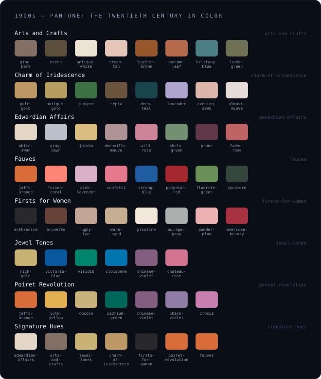
| Const | Palette | Slots |
|---|---|---|
ARTS_AND_CRAFTS | Arts and Crafts | 8 |
CHARM_OF_IRIDESCENCE | Charm of Iridescence | 8 |
EDWARDIAN_AFFAIRS | Edwardian Affairs | 8 |
FAUVES | Fauves | 8 |
FIRSTS_FOR_WOMEN | Firsts for Women | 8 |
JEWEL_TONES | Jewel Tones | 6 |
POIRET_REVOLUTION | Poiret Revolution | 7 |
SIGNATURE_HUES_1900 | Signature Hues | 7 |
1910s
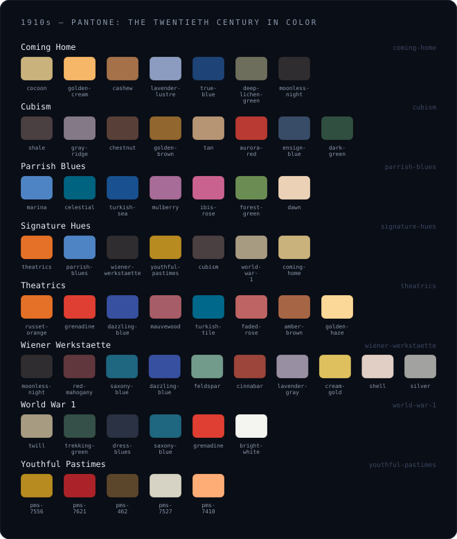
| Const | Palette | Slots |
|---|---|---|
COMING_HOME | Coming Home | 7 |
CUBISM | Cubism | 8 |
PARRISH_BLUES | Parrish Blues | 7 |
SIGNATURE_HUES_1910 | Signature Hues | 7 |
THEATRICS | Theatrics | 8 |
WIENER_WERKSTAETTE | Wiener Werkstaette | 10 |
WORLD_WAR_1 | World War 1 | 6 |
YOUTHFUL_PASTIMES | Youthful Pastimes | 5 |
1920s
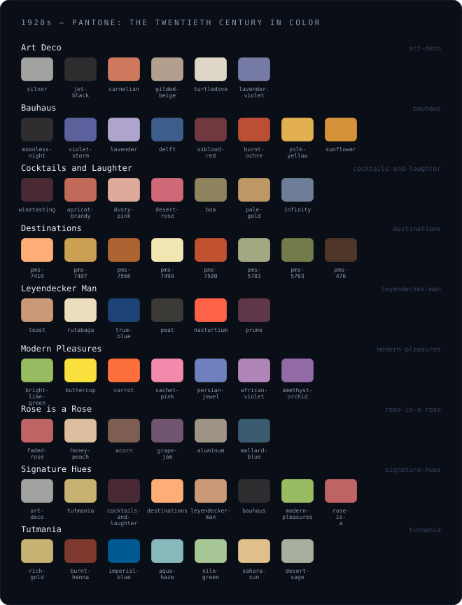
| Const | Palette | Slots |
|---|---|---|
ART_DECO | Art Deco | 6 |
BAUHAUS | Bauhaus | 8 |
COCKTAILS_AND_LAUGHTER | Cocktails and Laughter | 7 |
DESTINATIONS | Destinations | 8 |
LEYENDECKER_MAN | Leyendecker Man | 6 |
MODERN_PLEASURES | Modern Pleasures | 7 |
ROSE_IS_A_ROSE | Rose is a Rose | 6 |
SIGNATURE_HUES_1920 | Signature Hues | 8 |
TUTMANIA | Tutmania | 7 |
1930s
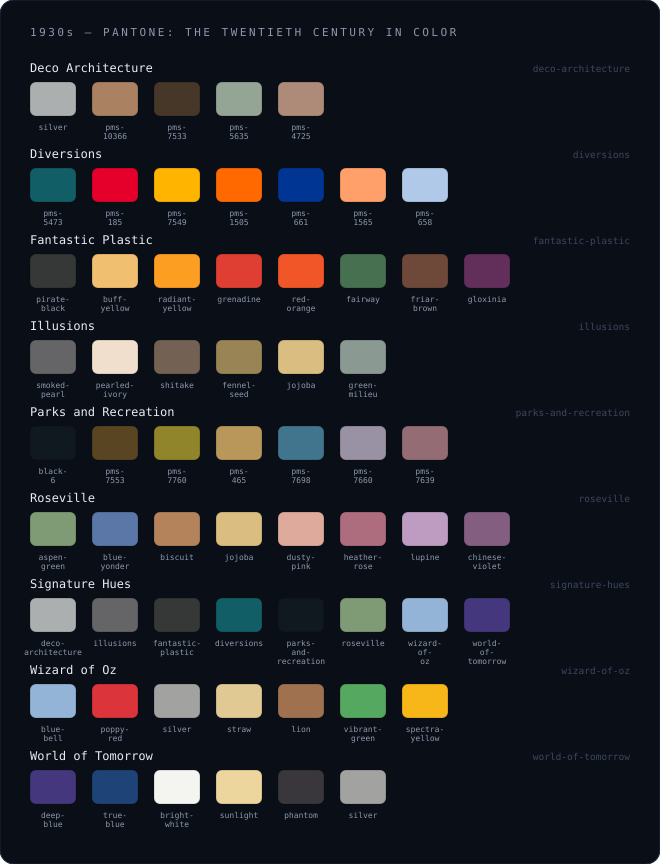
| Const | Palette | Slots |
|---|---|---|
DECO_ARCHITECTURE | Deco Architecture | 5 |
DIVERSIONS | Diversions | 7 |
FANTASTIC_PLASTIC | Fantastic Plastic | 8 |
ILLUSIONS | Illusions | 6 |
PARKS_AND_RECREATION | Parks and Recreation | 7 |
ROSEVILLE | Roseville | 8 |
SIGNATURE_HUES_1930 | Signature Hues | 8 |
WIZARD_OF_OZ | Wizard of Oz | 7 |
WORLD_OF_TOMORROW | World of Tomorrow | 6 |
1940s
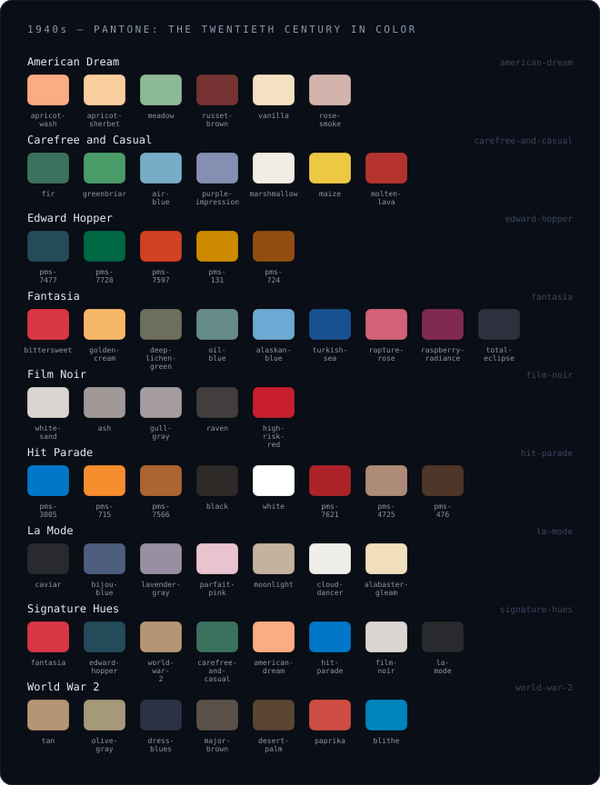
| Const | Palette | Slots |
|---|---|---|
AMERICAN_DREAM | American Dream | 6 |
CAREFREE_AND_CASUAL | Carefree and Casual | 7 |
EDWARD_HOPPER | Edward Hopper | 5 |
FANTASIA | Fantasia | 9 |
FILM_NOIR | Film Noir | 5 |
HIT_PARADE | Hit Parade | 8 |
LA_MODE | La Mode | 7 |
SIGNATURE_HUES_1940 | Signature Hues | 8 |
WORLD_WAR_2 | World War 2 | 7 |
1950s
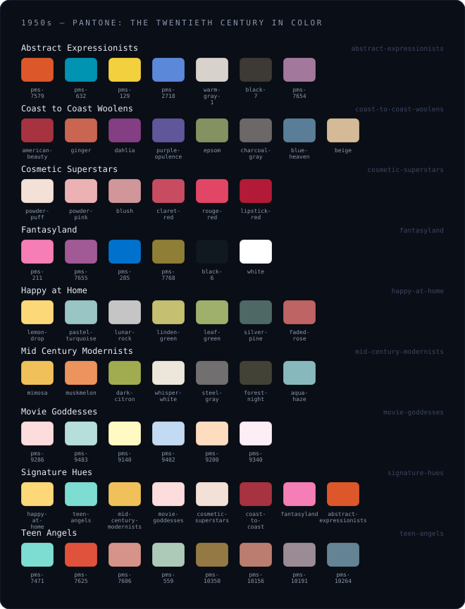
| Const | Palette | Slots |
|---|---|---|
ABSTRACT_EXPRESSIONISTS | Abstract Expressionists | 7 |
COAST_TO_COAST_WOOLENS | Coast to Coast Woolens | 8 |
COSMETIC_SUPERSTARS | Cosmetic Superstars | 6 |
FANTASYLAND | Fantasyland | 6 |
HAPPY_AT_HOME | Happy at Home | 7 |
MID_CENTURY_MODERNISTS | Mid Century Modernists | 7 |
MOVIE_GODDESSES | Movie Goddesses | 6 |
SIGNATURE_HUES_1950 | Signature Hues | 8 |
TEEN_ANGELS | Teen Angels | 8 |
1960s
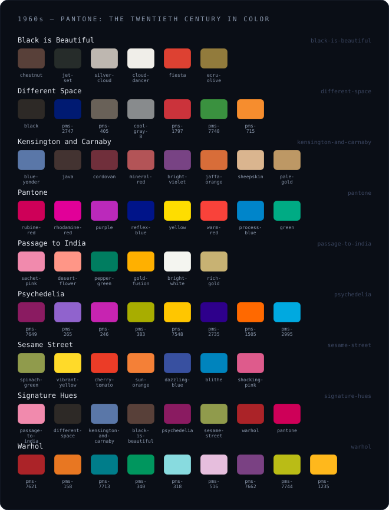
| Const | Palette | Slots |
|---|---|---|
BLACK_IS_BEAUTIFUL | Black is Beautiful | 6 |
DIFFERENT_SPACE | Different Space | 7 |
KENSINGTON_AND_CARNABY | Kensington and Carnaby | 8 |
PANTONE | Pantone | 8 |
PASSAGE_TO_INDIA | Passage to India | 6 |
PSYCHEDELIA | Psychedelia | 8 |
SESAME_STREET | Sesame Street | 7 |
SIGNATURE_HUES_1960 | Signature Hues | 8 |
WARHOL | Warhol | 9 |
1970s
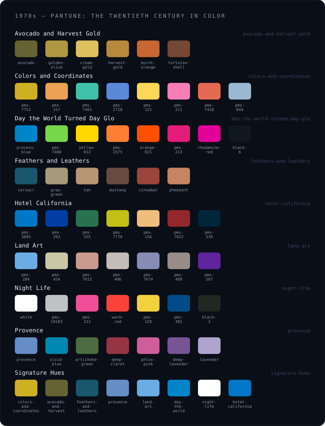
| Const | Palette | Slots |
|---|---|---|
AVOCADO_AND_HARVEST_GOLD | Avocado and Harvest Gold | 6 |
COLORS_AND_COORDINATES | Colors and Coordinates | 8 |
DAY_THE_WORLD_TURNED_DAY_GLO | Day the World Turned Day Glo | 8 |
FEATHERS_AND_LEATHERS | Feathers and Leathers | 6 |
HOTEL_CALIFORNIA | Hotel California | 7 |
LAND_ART | Land Art | 7 |
NIGHT_LIFE | Night Life | 7 |
PROVENCE | Provence | 7 |
SIGNATURE_HUES_1970 | Signature Hues | 8 |
1980s
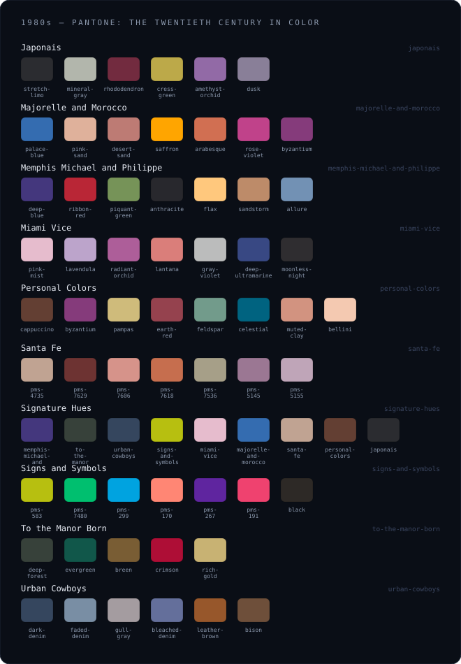
| Const | Palette | Slots |
|---|---|---|
JAPONAIS | Japonais | 6 |
MAJORELLE_AND_MOROCCO | Majorelle and Morocco | 7 |
MEMPHIS_MICHAEL_AND_PHILIPPE | Memphis Michael and Philippe | 7 |
MIAMI_VICE | Miami Vice | 7 |
PERSONAL_COLORS | Personal Colors | 8 |
SANTA_FE | Santa Fe | 7 |
SIGNATURE_HUES_1980 | Signature Hues | 9 |
SIGNS_AND_SYMBOLS | Signs and Symbols | 7 |
TO_THE_MANOR_BORN | To the Manor Born | 5 |
URBAN_COWBOYS | Urban Cowboys | 6 |
1990s
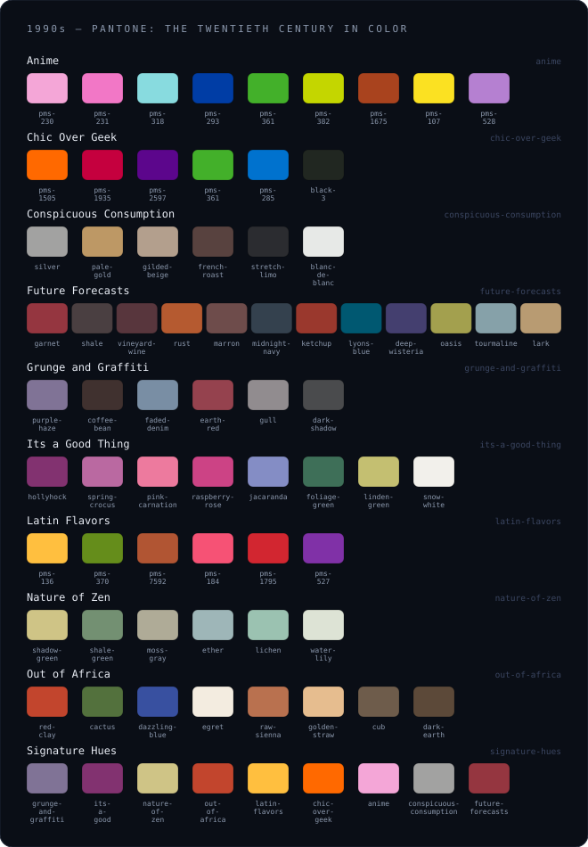
| Const | Palette | Slots |
|---|---|---|
ANIME | Anime | 9 |
CHIC_OVER_GEEK | Chic Over Geek | 6 |
CONSPICUOUS_CONSUMPTION | Conspicuous Consumption | 6 |
FUTURE_FORECASTS | Future Forecasts | 12 |
GRUNGE_AND_GRAFFITI | Grunge and Graffiti | 6 |
ITS_A_GOOD_THING | Its a Good Thing | 8 |
LATIN_FLAVORS | Latin Flavors | 6 |
NATURE_OF_ZEN | Nature of Zen | 6 |
OUT_OF_AFRICA | Out of Africa | 8 |
SIGNATURE_HUES_1990 | Signature Hues | 9 |
smearor-commons-font
Font metric utilities on ab_glyph fonts — the pure computations
only; font loading and caching policy stay with the consumer. All
results are expressed in smearor-commons-geometry units (Pixels,
Vec2, Rect).
What’s inside
- Glyph Fit —
glyph_fit_scale: thePxScalethat makes a glyph’s rendered size equaltarget_px - Centering —
centered_glyph: position the glyph’spx_boundscenter on a target point - Truncation —
truncate_text_to_width: the longest string prefix that fits a pixel width
flowchart LR
font["ab_glyph Font + GlyphId"] --> fit["glyph_fit_scale(target_px)"]
fit --> scale["PxScale"]
scale --> center["centered_glyph(target)"]
center --> glyph["positioned Glyph"]
text["PxScaleFont + &str"] --> trunc["truncate_text_to_width(max_width)"]
trunc --> short["fitted String"]
Three functions, one job each — smearor-commons-drawing builds its
icon pipeline on them (Codepoint.center, the glyph scale cache,
label rendering). See the crate’s rustdoc for the full API.
Glyph Fit
glyph_fit_scale answers the question every icon renderer asks:
which PxScale makes this glyph exactly target_px big?
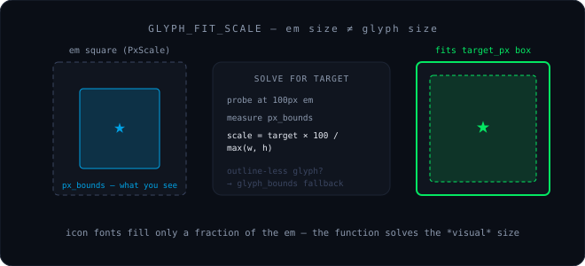
#![allow(unused)]
fn main() {
use ab_glyph::{Font, GlyphId};
use smearor_commons_font::glyph_fit_scale;
use smearor_commons_geometry::Pixels;
let em = glyph_fit_scale(&font, glyph_id, Pixels::new(48.0));
// → the em size whose *rendered* glyph spans 48 px in its largest dimension
}Why a solver at all
PxScale sets the em size, not the glyph size. Icon fonts
typically occupy a fraction of the em square — asking for PxScale 48 renders a glyph visibly smaller than 48 px, and the ratio differs
per glyph. So the function measures instead of guessing:
- probe the glyph at a fixed
100 pxem — large enough for integerpx_boundsprecision - take
max(width, height)of the outlined pixel bounds - solve proportionally:
scale = target_px × 100 / max
A glyph with no outline (outline_glyph returns None) falls back to
glyph_bounds — design space, not pixel-accurate, but the best
available estimate.
Where it’s used
smearor-commons-drawing caches exactly this computation in its
tech layer — a thread-local map keyed by (GlyphId, target_px), so
a tile grid re-rendering the same icon at the same size probes the
glyph once.
Centering
centered_glyph positions a scaled glyph so that the center of its
pixel bounds lands on a target point — the visual center, not the
em-box center.
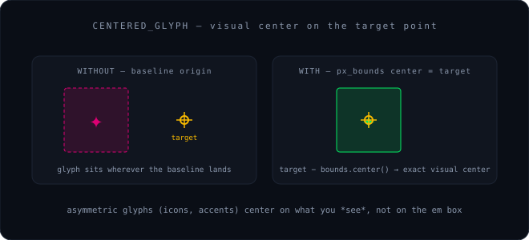
#![allow(unused)]
fn main() {
use ab_glyph::Font;
use smearor_commons_font::centered_glyph;
use smearor_commons_geometry::{Pixels, Vec2};
let glyph = centered_glyph(
&font, glyph_id, scale,
Vec2::<Pixels, f32>::new(160.0, 120.0), // the point to center on
);
// → glyph positioned so bounds.center() == target
}The math
target − bounds.center() becomes the glyph’s position. For the
bounds, px_bounds is preferred (precise for centering — it’s what
the rasterizer will actually paint); glyph_bounds is the fallback
when the glyph has no outline.
Why it matters for icons
An icon font’s glyphs are asymmetric inside their em squares —
a check mark’s ink sits low-right, a star sits centered, a bracket
hugs one side. Centering the em square leaves the visible glyph
off-center by a different amount per icon. Centering px_bounds
normalizes all of them onto the same point — which is exactly what
Codepoint’s center field in smearor-commons-drawing expects.
Truncation
truncate_text_to_width shortens a string until it fits a maximum
pixel width at a given scaled font — the label-overflow primitive for
tight surfaces like tiles and list rows.
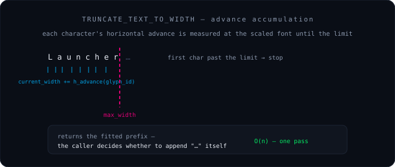
#![allow(unused)]
fn main() {
use ab_glyph::Font;
use smearor_commons_font::truncate_text_to_width;
use smearor_commons_geometry::Pixels;
let scaled = font.as_scaled(PxScale::from(14.0));
let fitted = truncate_text_to_width("Launcher Settings", &scaled, Pixels::new(96.0));
// → "Launcher S" or whatever fits — measured, not estimated
}How it measures
One pass, O(n): each character’s glyph_id is looked up on the scaled
font and h_advance accumulates into current_width. The first
character that would exceed max_width stops the loop — the function
returns the longest prefix that fits.
No ellipsis built in
The function returns the fitted prefix as-is — it does not append
… itself. That’s deliberate: the caller decides whether to show a
truncation indicator, which character to use (…, …, a fade), or
whether a shorter string at a smaller font is preferable. Appending
the ellipsis is a one-liner on the consumer side; taking it back would
be impossible.
Input
scaled_font: &PxScaleFont<&F> — borrow a scaled view of any
ab_glyph::Font (font.as_scaled(px)) rather than scaling the font
itself, so the same FontVec serves label and icon sizes alike.
smearor-commons-noise
Deterministic procedural noise over Vec2/Vec3/Vec4: the Hoskins
hash family as a generic Hash<Out> trait, table-free simplex fields
(Simplex2D, Simplex3D + the fractal variants) and the generic Fbm
combinator — pure std, headless.
- Hash —
Hash<Out>, the 13hashNNimpls,fractsemantics. - Simplex —
Field<P>trait, both simplex fields, the fixed fractal variants. - fBm —
FbmwithOctaves/Gain/Lacunaritynewtypes. - Seeding —
Seed, coordinate-offset seeding,mixfor sibling seeds.
Everything is deterministic: the hash family is sine-free and the
simplex variants take their gradients from hash22/hash33, so a
Seed always replays the same field.
Hash
Hash<Out> is a generic trait: p.hash() returns the Out-shaped
hash of p, every component in [0, 1).
let v: f64 = p.hash(); // GLSL hash13
let v: Vec3<()> = p.hash(); // GLSL hash33
let v: Vec4<()> = Hash::<Vec4<()>>::hash(&p); // hash44, explicitThe 13 impls mirror the GLSL hashNN naming (input dimension × output
dimension) and implement David Hoskins’ “hash without sine” recipe
(MIT) — fract/multiply/add only, so output is bitwise stable across
platforms. Each impl’s rustdoc names its hashNN designation.
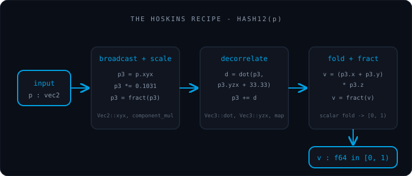
fract(x) = x - x.floor() — exact for negative inputs.
The same recipe rendered by the crate itself — hash11 over
[0, 20), generated by examples/render_book_svg.rs:
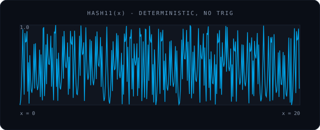
Simplex
Field<P> abstracts a scalar noise field sampled at a point;
pub trait Field<P> { fn at(&self, p: P) -> f64; }| Type | Domain | Output |
|---|---|---|
Simplex2D | Vec2<()> | [0, 1] |
Simplex3D | Vec3<()> | [0, 1] |
Simplex2DFractal | Vec2<()> | ~[0, 1] (octave sum) |
Simplex3DFractal | Vec3<()> | ~[0, 1] (octave sum) |
Simplex2D is the Quilez hash-simplex (gradients via hash22);
Simplex3D is the Miropolskiy variant (gradients via hash33,
renormalized * 0.5 + 0.5 — not [-1,1]). Both are table-free
and deterministic. The fractal variants rotate the domain between
their four fixed octaves (mat2(1.6,1.2,-1.2,1.6) resp. three mat3
rotators) to break up directional artifacts.
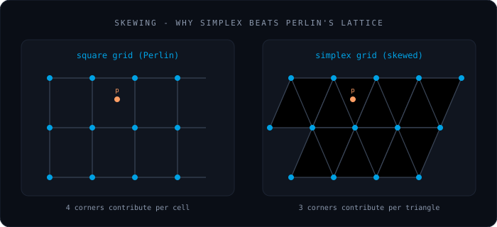
Skewing squashes the lattice so each cell is a triangle (a tetrahedron in 3D): three gradient lookups per sample instead of four — and the trick that makes simplex scale to higher dimensions cheaply.
The field itself, rendered by examples/render_book_svg.rs — note
the smooth continuity, no grid-aligned artifacts:
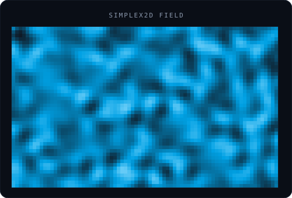
fBm
Fbm sums octaves copies of any Field<P>, lacunarity scaling
frequency and gain scaling amplitude per octave:
Fbm::FOUR_OCTAVES.at(&Simplex2D, p)Fields are newtypes (Octaves(u32), Gain(f64), Lacunarity(f64)),
serde(transparent) — {"octaves":4,"gain":0.5,"lacunarity":2.0}.
FOUR_OCTAVES is the classic 4 / 0.5 / 2.0 configuration.
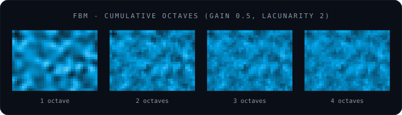
Seeding
Seed(u64) is a serde-transparent newtype. Fields are seeded by
coordinate offset, not by re-randomizing the field:
let v = Simplex3D.at(p + seed.offset_3d());
let flames = Simplex2D.at(uv + seed.offset_2d());Seed::random()— nondeterministic from the system clock (theMath.random()equivalent)Seed::mix(&other)— deterministic decorrelated sibling seed for independent fields in one runSeed::as_f64()— the seed as[0,1)scalar
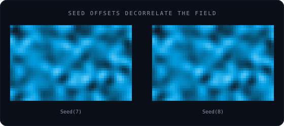
smearor-commons-buffer
Pixel and graphics buffer types: ownership, format, extent and stride.
smearor-commons-buffer models the three questions every software
rasterizer has to answer: what do the bytes mean (the PixelFormat
marker types), where do the rows live (BufferMetadata +
Stride), and who owns them (PixelBuffer vs. the BufferView
borrow types).
- Formats — the nine
PixelFormatmarkers and their byte layouts, plus the runtimePixelFormatIdmirror - Layout —
BufferMetadata,Stride, packed vs. strided rows, offset math,BufferErrorvalidation - Views —
BufferView/BufferViewMutover foreign memory: Wayland SHM, framework surfaces - PixelBuffer — the owned packed buffer and its in-place format conversions
- GTK — the
gtk4bridge:MemoryFormatmapping,MemoryTextureupload/download, image decode
classDiagram
class PixelBuffer~F~ {
<<owned>>
+new(size)
+from_raw(size, pixels)
+view()
+view_mut()
+into_bgra()
+into_rgba()
}
class BufferView~'a, F~ {
<<borrowed>>
+from_raw(data, metadata)
+from_packed(data, size)
}
class BufferViewMut~'a, F~ {
<<borrowed mut>>
+from_raw(data, metadata)
+fill(pixel)
}
class BufferMetadata {
+width, height, stride
}
class PixelFormat {
<<trait marker>>
+Rgba, Bgra, Rgb, Bgr, ...
}
PixelBuffer --> BufferView : view()
PixelBuffer --> BufferViewMut : view_mut()
BufferView --> BufferMetadata
BufferViewMut --> BufferMetadata
PixelBuffer ..> PixelFormat : F
Drawing operations live downstream (smearor-commons-drawing); framework
bridges (image, cairo, gtk4, smithay) are added behind
dependency-named features. See the crate’s rustdoc for the full API.
Formats
The pixel format is a type-level marker, not a runtime flag.
PixelBuffer<Rgba> and PixelBuffer<Bgra> are different types — a
mismatch is a compile error, never a runtime check.
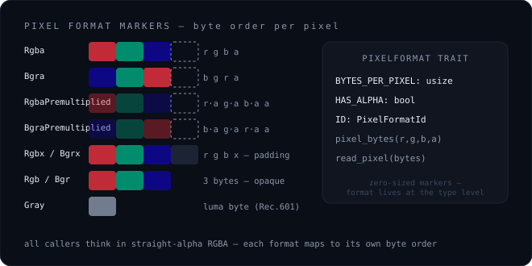
The PixelFormat trait
Implementors are zero-sized tags carried as PhantomData. The trait
anchors all channel knowledge on the format itself:
#![allow(unused)]
fn main() {
// const interface — no methods on values
F::BYTES_PER_PIXEL // 4 | 3 | 1
F::HAS_ALPHA // false for Rgb/Rgbx — padding is not alpha
F::ID // PixelFormatId — the runtime mirror
}pixel_bytes(r, g, b, a) encodes straight-alpha RGBA channels into
this format’s byte order; read_pixel decodes back. Premultiplied
formats multiply/divide by alpha on the way in and out; alpha-free
formats read as opaque; Gray reduces to a Rec.601 luma
(0.299·r + 0.587·g + 0.114·b as fixed-point byte math).
The nine markers
| Marker | Bytes | Alpha | Order |
|---|---|---|---|
Rgba | 4 | yes | r g b a — the default (PixelBuffer without F) |
Bgra | 4 | yes | b g r a — Wayland/cairo’s favorite |
RgbaPremultiplied | 4 | yes | r·a g·a b·a a |
BgraPremultiplied | 4 | yes | b·a g·a r·a a — what gdk_texture_download yields |
Rgb / Bgr | 3 | opaque | no alpha byte at all |
Rgbx / Bgrx | 4 | ignored | 4th byte is padding, not a channel |
Gray | 1 | opaque | single luma byte |
PixelFormatId — the runtime mirror
PixelFormatId is the value-level enum of the same set —
BYTES_PER_PIXEL-style info at runtime (bytes_per_pixel(),
has_alpha(), Display) for diagnostics, wire formats and the GTK
MemoryFormat mapping:
#![allow(unused)]
fn main() {
use smearor_commons_color::Color;
use smearor_commons_buffer::{Bgra, PixelFormat, PixelFormatId};
let id = Bgra::ID; // PixelFormatId::Bgra
id.bytes_per_pixel(); // 4
id.has_alpha(); // true
format!("{id}"); // "bgra"
}The type-level marker and the runtime id are tied together by
F::ID — no way to declare one format and report another.
Layout
BufferMetadata carries the format-agnostic geometry of a buffer:
width and height in Pixels<u32>, stride as a Stride(pub u32)
newtype — bytes per row including padding.
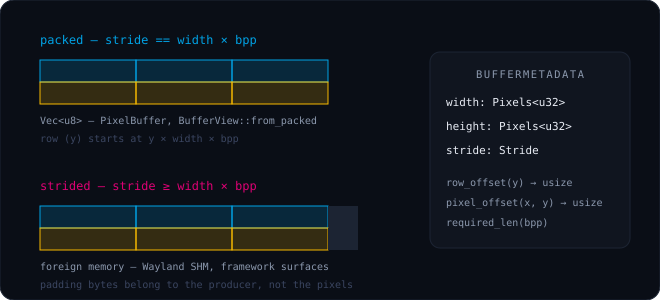
Packed vs. strided
- Packed (
stride == width × bytes_per_pixel) — whatPixelBufferallocates and whatBufferView::from_packedexpects: rows back to back, no gaps. - Strided (
stride ≥ width × bpp) — foreign memory from Wayland SHM pools, framework surfaces, GPU downloads. The padding belongs to the producer’s alignment; the pixels end before the row does.
#![allow(unused)]
fn main() {
use smearor_commons_buffer::{BufferMetadata, Stride};
use smearor_commons_geometry::Pixels;
let packed = BufferMetadata::packed(Pixels::new(800), Pixels::new(480), 4);
packed.stride; // Stride(3200) — public fields, no getters
}#![allow(unused)]
fn main() {
use smearor_commons_buffer::{BufferMetadata, Stride};
use smearor_commons_geometry::Pixels;
// a Wayland SHM row of 800 BGRA pixels aligned to 3328 bytes:
let meta = BufferMetadata::new(Pixels::new(800), Pixels::new(480), Stride::new(3328));
meta.size(); // Size(800, 480)
meta.row_bytes(4); // 3200 — the pixels' share of a row
meta.required_len(4); // stride·(h-1) + row_bytes — minimal valid length
meta.is_packed(4); // false — 3328 > 3200
meta.row_offset(Pixels::new(3)); // Some(3 × 3328)
meta.pixel_offset(Pixels::new(10), Pixels::new(3)); // Some(3·3328 + 10·4)
}Validation
validate(bytes_per_pixel, data_len) checks the whole contract before
a view wraps foreign memory, returning the dedicated BufferError
variants:
#![allow(unused)]
fn main() {
use smearor_commons_buffer::{BufferError, BufferMetadata, Stride};
use smearor_commons_geometry::Pixels;
let meta = BufferMetadata::new(Pixels::new(800), Pixels::new(480), Stride::new(3328));
meta.validate(4, 800 * 480 * 4)?; // Ok
meta.validate(4, 100)?; // Err(BufferError::DataTooShort { .. })
}BufferError | Trigger |
|---|---|
LengthMismatch | PixelBuffer::from_raw data ≠ size.x·size.y·bpp |
StrideTooSmall | stride < packed row width — would drop pixels |
DataTooShort | slice shorter than required_len — last row cut off |
The format is deliberately absent from BufferMetadata — it lives at
the type level on buffers and views, so a metadata struct stays
shareable across formats.
Views
BufferView<'a, F> and BufferViewMut<'a, F> are the borrowed side of
the crate — they describe pixel data the caller doesn’t own:
Wayland SHM pools, surfaces handed over by a framework, a slice inside
someone else’s allocation.
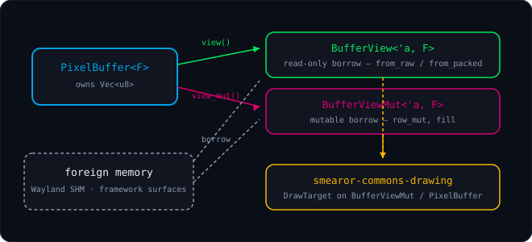
Construction is validation
Both constructors take raw bytes plus BufferMetadata and check the
contract up front — after from_raw returns Ok, every accessor is
infallible:
#![allow(unused)]
fn main() {
use smearor_commons_buffer::{BufferMetadata, BufferView, Bgra, Stride};
use smearor_commons_geometry::Pixels;
let shm: &[u8] = /* Wayland pool contents */;
let meta = BufferMetadata::new(Pixels::new(800), Pixels::new(480), Stride::new(3328));
let view = BufferView::<Bgra>::from_raw(shm, meta)?; // validates stride + length
view.row(Pixels::new(0)); // Option<&[u8]> — pixels only, no padding
view.pixel_offset(Pixels::new(10), Pixels::new(3)); // Option<usize> into the slice
view.is_packed(); // false
}For packed callers, from_packed(data, size) builds the metadata
itself.
Mutable views write foreign memory in place
BufferViewMut adds data_mut(), row_mut(y) and fill(pixel) —
packed views get a single word-sized pass, strided views fill per row
and leave padding bytes untouched:
#![allow(unused)]
fn main() {
use smearor_commons_buffer::{BufferViewMut, Rgba};
use smearor_commons_geometry::Size;
let mut backing = vec![0u8; 640 * 480 * 4];
let mut view = BufferViewMut::<Rgba>::from_packed(&mut backing, Size::new(640, 480))?;
view.fill(&[0x0a, 0x0e, 0x16, 0xff]); // smearor background, everywhere
}Why views, not just &mut [u8]
Consumers like smearor-commons-drawing render into
BufferViewMut — accepting a view instead of a bare slice means the
extent, stride and format are already agreed upon. The F parameter
does the same job as on PixelBuffer: the compiler rejects drawing
RGBA into memory laid out as BGR.
PixelBuffer
PixelBuffer<F> owns its pixels: a packed Vec<u8> plus a
Size<u32>. F defaults to Rgba, so PixelBuffer::new(size) is an
RGBA buffer.
#![allow(unused)]
fn main() {
use smearor_commons_buffer::{PixelBuffer, Rgba};
use smearor_commons_geometry::Size;
let mut buffer = PixelBuffer::<Rgba>::new(Size::new(64, 64)); // zeroed, 16 KiB
buffer.width(); // Pixels(64)
buffer.area(); // Pixels(4096)
buffer.pixels_mut(); // &mut [u8] — write channels directly
buffer.is_zero(); // all-zero fast path (e.g. "nothing drawn yet")
}from_raw(size, pixels) validates pixels.len() == expected_len(size) — otherwise BufferError::LengthMismatch.
Views into the owned memory
view() / view_mut() lend the allocation to APIs that take
BufferView/BufferViewMut — drawing, for instance, never needs to
know whether it renders into an owned buffer or foreign memory.
Format conversions — in place
Conversions rewrite the existing Vec and hand back the same bytes
retyped — no second allocation:
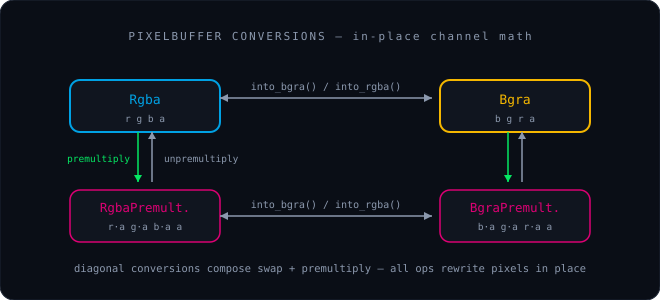
#![allow(unused)]
fn main() {
use smearor_commons_buffer::{Bgra, BgraPremultiplied, PixelBuffer, Rgba};
let rgba = PixelBuffer::<Rgba>::new(size);
let bgra: PixelBuffer<Bgra> = rgba.into_bgra(); // swap r/b
let pre: PixelBuffer<BgraPremultiplied> = bgra.into_premultiplied(); // c *= a
let back = pre.into_unpremultiplied().into_rgba(); // full round-trip
}into_bgra()/into_rgba()— channel swaps, on both the straight and the premultiplied sideinto_premultiplied()/into_unpremultiplied()— multiply or divide the color channels by alpha (a = 0unpremultiplies to black, not to garbage)- the conversions exist for exactly the four 4-byte-alpha formats —
the compiler rejects e.g.
Rgb → RgbaPremultiplied, since there is no alpha to multiply by
The diagonal (e.g. Rgba → BgraPremultiplied) composes both steps:
into_bgra().into_premultiplied().
GTK
The gtk4 feature adds the two-directional bridge to gdk —
smearor-commons stays headless without it; with it, software-rendered
pixels go straight into widgets.
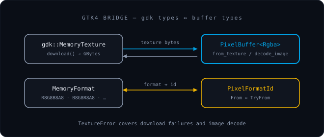
Formats: PixelFormatId ⇄ gdk::MemoryFormat
Every 8-bit PixelFormatId has an exact MemoryFormat counterpart
(R8g8b8a8, B8g8r8a8, G8, …). The From direction is infallible;
TryFrom<MemoryFormat> hands back the format value when it hits a
16/32-bit or float layout with no commons counterpart.
Upload: to_memory_texture()
On PixelBuffer<F> for any format — the texture gets F::ID’s
gdk equivalent and a copy of the packed bytes:
#![allow(unused)]
fn main() {
use smearor_commons_buffer::{PixelBuffer, Bgra};
let buffer = PixelBuffer::<Bgra>::new(size);
let texture = buffer.to_memory_texture(); // gdk::MemoryTexture — upload once
// picture.set_paintable(Some(&texture));
}Download: from_texture() & decode_image()
gdk_texture_download always yields ARgb32 — premultiplied BGRA in
memory order — so PixelBuffer::<Rgba>::from_texture is infallible:
it unpremultiplies and reorders through the PixelFormat channel
interface, giving straight-alpha RGBA no matter what the texture stored.
decode_image(bytes) goes one step further — any image format gdk
understands (PNG, JPEG, …) becomes a PixelBuffer<Rgba>:
#![allow(unused)]
fn main() {
use smearor_commons_buffer::PixelBuffer;
let buffer = PixelBuffer::decode_image(&png_bytes)?; // TextureError::Decode on failure
}TextureError splits the two failure modes: Decode(glib::Error) for
undecodable image bytes, UnsupportedFormat(MemoryFormat) when a
texture memory format has no PixelFormatId — e.g. HDR float formats.
smearor-commons-drawing
Shared rendering vocabulary on pixel buffers: primitives, icons, text
and progress indicators, split into per-capability traits —
DrawPrimitiveOps, DrawIconOps, DrawTextOps and DrawProgressOps
— so backends can implement them incrementally and consumers can bound
on exactly the capabilities they need. DrawOps bundles all four as a
supertrait, DrawBackend ties them to a single associated Error
type and DrawTarget adds the pixel extent plus the default color
policy (default_text_color for the active/inactive states).
The software-raster backend implements the vocabulary for
BufferViewMut<Rgba> and PixelBuffer<Rgba> out of the box. Behind
the cairo feature, CairoTarget renders the same vocabulary onto
cairo surfaces (ViewSurface, image_surface_from_buffer,
DrawingError); gtk4 builds on top of that.
What’s inside
- Traits —
DrawBackend’s error-as-property design, the four capability traits,DrawOps/DrawTarget, prelude - Primitives — the six shape specs plus
fill_background, source-over blending - Icons —
Icon/Codepoint/IconGrid, the caller-resolved codepoint design, glyph scale cache - Text & Progress — label/centered/
positioned text, bitmap fallback,
ProgressBar+Gauge - RenderContext — the builder facade:
fonts, colors,
is_active, tile layout conventions - Cairo —
CairoTarget, zero-copyViewSurface, surface bridges, path helpers,DrawingError
Draw specs
Every operation takes a plain-data spec:
- Primitives —
FillRect,StrokeRect,FillCircle,FillPolygon,StrokePolyline,FillSector. - Icons —
Icon,Codepoint,IconGrid; icon names are resolved through a caller-providedresolve_codepointclosure, so the crate stays font-agnostic. - Progress —
ProgressBar(anchored at the target’s bottom edge, raised byPROGRESS_BAR_BOTTOM_MARGIN) andGauge(circular ring).
flowchart LR
rc["RenderContext (builder facade)"] --> target["DrawTarget: DrawOps + size"]
target --> ops["DrawPrimitiveOps · DrawIconOps · DrawTextOps · DrawProgressOps"]
buf["BufferViewMut / PixelBuffer (software raster)"] -. implements .-> target
cairo["CairoTarget (feature: cairo)"] -. implements .-> target
RenderContext
RenderContext is the builder facade over any DrawTarget: chain
icon_font / label_font / background / icon_color /
text_color / active, then call draw_icon, draw_icon_by_name,
draw_label, draw_text, draw_progress_bar or draw_icon_grid.
Layering and fallbacks
ops— the public, backend-neutral vocabulary (capability traits).tech— crate-internal adapters over rendering tech (ab_glyphglyph metrics); usable by any backend, not a backend itself.buffer— the software-raster backend: one module per capability,buffer_view_mutdoes the work andpixel_bufferdelegates.cairo— the cairo backend behind its feature gate.
Fonts are injected as &FontVec parameters — loading and caching stay
with the consumer. Where a fallback exists the parameter is
Option<&FontVec>: icons fall back to draw_icon_placeholder, text to
the built-in bitmap renderer. use smearor_commons_drawing::prelude::*
brings all capability traits into scope at once. See the crate’s
rustdoc for the full API.
Traits
The crate’s public surface is a capability vocabulary — four traits, each covering one kind of rendering. Backends implement them incrementally; consumers bound on exactly what they need.
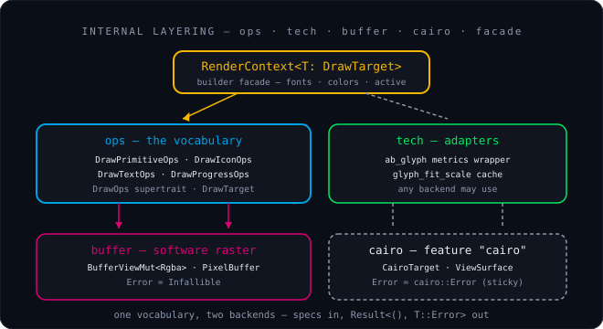
DrawBackend — one error type per target
The base trait carries a single associated Error. That makes error
handling a property of the target, not a tax on every call site:
- the software raster (
BufferViewMut<Rgba>,PixelBuffer) usescore::convert::Infallible— slice writes cannot fail CairoTargetusescairo::Error, preserving cairo’s deferred error semantics: a failed surface reports the same sticky error on every subsequent call
The four capability traits
| Trait | Methods | Paints |
|---|---|---|
DrawPrimitiveOps | fill_background, fill_rect, stroke_rect, fill_circle, fill_polygon, stroke_polyline, fill_sector | surfaces & shapes |
DrawIconOps | draw_icon, draw_icon_placeholder, draw_codepoint, draw_icon_grid | font glyphs as icons |
DrawTextOps | draw_label, draw_text_centered, draw_text | text runs |
DrawProgressOps | draw_progress_bar, draw_gauge | indicators |
DrawOps is the umbrella supertrait (blanket-implemented) — bound on
it when a consumer wants the whole vocabulary. DrawTarget adds
size() plus default_text_color(is_active) — the single anchor for
the crate’s color policy, and status() for sticky-error backends.
&mut T composes
Every capability trait is also implemented for &mut T — so
&mut PixelBuffer can itself serve as a DrawTarget without ceremony.
prelude
Method calls need the declaring trait in scope.
use smearor_commons_drawing::prelude::*; brings in all traits plus
the spec structs at once — the intended consumer import.
Primitives
DrawPrimitiveOps covers surface fills and the shape vocabulary —
each method takes a plain spec struct: geometry + Color<f64> +
Alpha.
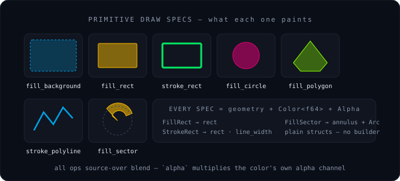
The vocabulary
#![allow(unused)]
fn main() {
use smearor_commons_color::{Alpha, Color};
use smearor_commons_drawing::prelude::*;
use smearor_commons_geometry::{Circle, Pixels, Rect, Vec2};
// impl Into<Color<u8>> — the one method without a spec
target.fill_background(Color::<u8>::new_rgba(10, 14, 22, 255))?;
let rect: Rect<Pixels> = Rect::from_xywh(10.0, 10.0, 60.0, 30.0);
target.fill_rect(FillRect::new(rect, Color::new_rgba(0.0, 0.63, 0.89, 1.0), Alpha::OPAQUE))?;
let circle: Circle<Pixels> = Circle::new(Vec2::new(45.0, 30.0), 12.0);
target.fill_circle(FillCircle::new(circle, Color::new_rgba(0.86, 0.0, 0.45, 1.0), Alpha::new(0.6)))?;
}| Spec | Geometry | Extra field |
|---|---|---|
FillRect | Rect<Pixels> | — |
StrokeRect | Rect<Pixels> | line_width — centered on the edge |
FillCircle | Circle<Pixels> | — |
FillPolygon | Polygon<Pixels> | even-odd fill |
StrokePolyline | Polyline<Pixels> | line_width; the path stays open |
FillSector | Annulus<Pixels> + Arc | pie-ring wedges |
Blending policy
All primitives source-over blend onto existing pixels — matching
what a cairo backend produces with set_source_rgba + fill. The
spec’s alpha composes with the color’s own alpha channel, so a
half-transparent yellow at Alpha::new(0.5) lands at quarter
intensity.
Only the declared pixel area is written: row padding and memory beyond the view extent stay untouched.
Icons
DrawIconOps renders font glyphs as icons — the crate never does
name resolution itself. Icon names become codepoints through a
caller-provided resolve closure; fonts arrive as &FontVec
parameters (loading and caching stay with the consumer).
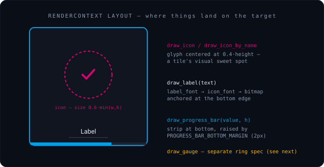
Four entry points
#![allow(unused)]
fn main() {
use smearor_commons_drawing::prelude::*;
use smearor_commons_geometry::{Grid, Pixels, Vec2};
// by name — resolves "folder" → '\u{f07b}' through the caller's map
target.draw_icon(Icon::new(
Some(&icon_font), "folder", true, &resolve_codepoint, None,
))?;
// unresolved or font-less draws the placeholder glyph instead of nothing
target.draw_icon_placeholder(true, None)?;
// explicit codepoint + exact placement
target.draw_codepoint(Codepoint::new(
&icon_font, '\u{f07b}', Vec2::<Pixels, f32>::new(32.0, 40.0),
Pixels::new(48.0), color,
))?;
// a grid of named icons — one codepoint per cell
target.draw_icon_grid(IconGrid::new(&icon_font, &names, grid, false, &resolve_codepoint))?;
}Icon<'a>—name,is_active(drives the target’sdefault_text_color),resolve, optionalfontandcolorCodepoint<'a>— the fully-resolved form:font,codepoint,center,size,colorIconGrid<'a>—icons: &[&str]+ a geometryGrid; unresolved names get the placeholder treatment per cell
The scale-fit cache
Glyph metrics come from smearor_commons_font’s
glyph_fit_scale — and repeated icon renders are expensive to re-probe.
The tech layer keeps a thread-local cache keyed by
(GlyphId, target_px), so a tile grid re-rendering the same icon at
the same size probes the glyph outline once.
Text & Progress
DrawTextOps and DrawProgressOps cover the remaining vocabulary —
labels, positioned text, and the two indicator shapes.
Text
All three methods take the font as Option<&FontVec>; a None font
falls back to the raster backend’s built-in bitmap renderer (cairo
uses its toy text API with system Sans). Text rendering never
hard-fails on a missing font.
#![allow(unused)]
fn main() {
use smearor_commons_geometry::{Pixels, Vec2};
// bottom-anchored label — the tile convention
target.draw_label(Some(&font), "Launcher", true, None)?;
// horizontally centered on a baseline
target.draw_text_centered(Some(&font), "42", Pixels::new(80.0), Pixels::new(28.0), color)?;
// baseline at an exact position
target.draw_text(Some(&font), Vec2::<Pixels, f32>::new(8.0, 24.0), "smearor", Pixels::new(14.0), color)?;
}draw_label’s is_active flag and text_color_override route
through the target’s default_text_color(is_active) — one anchor for
the crate’s color policy, overridable per call or per target.
Progress
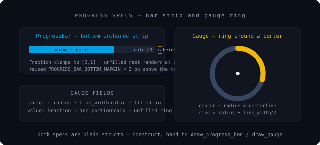
#![allow(unused)]
fn main() {
use smearor_commons_drawing::prelude::*;
use smearor_commons_color::Color;
use smearor_commons_geometry::{Fraction, Pixels, Vec2};
// full-width strip, anchored 2 px above the target's bottom edge
target.draw_progress_bar(ProgressBar::new(
Fraction::new(0.68), Color::new_rgba(0.0, 0.63, 0.89, 1.0), Pixels::new(5.0),
))?;
// ring gauge: center, centerline radius, stroke, fraction
target.draw_gauge(Gauge::new(
Vec2::<Pixels, f32>::new(50.0, 50.0), Pixels::new(30.0), Pixels::new(6.0),
Fraction::new(0.68), Color::new_rgba(0.96, 0.72, 0.0, 1.0), Color::new_rgba(0.2, 0.25, 0.35, 1.0),
))?;
}ProgressBar—value: Fraction(clamped to[0,1]by the backends),color,height. The unfilled rest of the strip renders at a third of the color; the strip sitsPROGRESS_BAR_BOTTOM_MARGIN(2 px) above the bottom edge.Gauge—center,radius(centerline — the ring occupiesradius ± line_width/2),line_width,value,colorfor the filled arc,trackfor the unfilled ring.
RenderContext
RenderContext<'a, T: DrawTarget> is the builder facade over a render
target — it bundles fonts, colors and the active flag once, then
exposes convenience methods with the tile layout baked in.
Configuration
#![allow(unused)]
fn main() {
use smearor_commons_color::Color;
use smearor_commons_drawing::RenderContext;
let mut ctx = RenderContext::new(target)
.icon_font(Some(&icon_font)) // icons + text fallback
.label_font(Some(&label_font)) // text; falls back to icon_font, then bitmap
.background(Color::new_rgba(0.04, 0.05, 0.08, 1.0))
.icon_color(Color::new_rgba(0.0, 0.63, 0.89, 1.0))
.text_color(Color::new_rgba(0.94, 0.94, 0.94, 1.0))
.active(true);
}Anything left unset resolves through the target’s
default_text_color(is_active) — and fill_background() simply does
nothing without a configured background.
Drawing
#![allow(unused)]
fn main() {
use smearor_commons_geometry::{Fraction, Grid, Pixels, Vec2};
ctx.fill_background()?;
// glyph centered at 0.4·height, size 0.6·min(w,h) — the tile look
ctx.draw_icon('\u{f07b}')?;
ctx.draw_icon_by_name("folder", |name| resolve(name))?;
// bottom-anchored label; centered and free-positioned variants
ctx.draw_label("Launcher")?;
ctx.draw_text("42", Pixels::new(80.0))?; // centered on baseline
ctx.draw_text_sized("42", Pixels::new(80.0), Pixels::new(28.0))?;
ctx.draw_text_at(Vec2::<Pixels, f32>::new(8.0, 24.0), "hi", Pixels::new(14.0))?;
ctx.draw_progress_bar(Fraction::new(0.68), Pixels::new(5.0))?;
ctx.draw_icon_grid(&names, grid, |name| resolve(name))?;
}The same layout conventions the spec-level API leaves to the caller are
fixed here: draw_icon centers at 0.4 · height (the visual sweet
spot above a bottom label) at 0.6 · min(w, h) size; labels and the
progress strip anchor to the bottom edge. size(), width(),
height() forward the target’s extent for consumer-side layout math.
Error type
All methods return Result<(), T::Error> — Infallible on buffer
targets, cairo::Error on CairoTarget. The context adds no error
type of its own.
Cairo
The cairo feature adds a second backend: CairoTarget implements
the same DrawTarget vocabulary on a cairo::Context, and bridging
helpers move pixels between cairo surfaces and buffer types without
copies where cairo allows it.
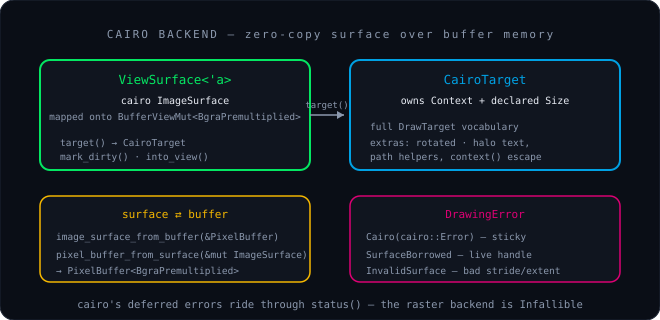
ViewSurface — cairo on buffer memory
ViewSurface::new(view) wraps a BufferViewMut<BgraPremultiplied>
in a cairo ImageSurface whose pixel storage is the view’s
memory — cairo draws straight into the buffer, zero copy. That works
because cairo’s native 32-bit layout is exactly BgraPremultiplied.
#![allow(unused)]
fn main() {
use smearor_commons_drawing::{CairoTarget, ViewSurface};
let mut surface = ViewSurface::new(view)?; // view: BufferViewMut<BgraPremultiplied>
let target = surface.target()?; // CairoTarget into that memory
target.fill_background(color)?; // same vocabulary as the raster backend
surface.mark_dirty(); // tell cairo the pixels changed
let view = surface.into_view(); // hand the view back
}CairoTarget — a value-type render target
CairoTarget::new(ctx, size) clones a Context handle (a refcount
bump) plus a declared extent — deliberately a value type, so it can
be constructed inside GTK snapshot/set_draw_func callbacks and
owned by RenderContext like any other target.
context()— the escape hatch for anything outside the shared vocabulary:save/restore, transforms, patterns, sources- cairo-only extras:
draw_rotated_text,draw_halo_text - path helpers (free functions):
polyline_path,smooth_path,wavy_path,band_path,rounded_rect_path,tile_fill status()surfaces cairo’s sticky deferred error —DrawTarget’s end-of-pass check
Surface ⇄ buffer
#![allow(unused)]
fn main() {
use smearor_commons_drawing::{image_surface_from_buffer, pixel_buffer_from_surface};
let surface = image_surface_from_buffer(&buffer)?; // PixelBuffer<F> → ImageSurface
let back = pixel_buffer_from_surface(&mut surface)?; // → PixelBuffer<BgraPremultiplied>
}DrawingError
| Variant | Raised when |
|---|---|
Cairo | a cairo runtime error from surface/context creation |
SurfaceBorrowed | ImageSurface::data() refused — a live Context or surface clone still borrows the pixels; drop all handles before readback |
InvalidSurface | a BufferViewMut layout cairo can’t wrap — stride too small, extent beyond i32 |
The gtk4 feature stacks on cairo — ViewSurface +
smearor-commons-buffer’s to_memory_texture() covers the
render→display path for GTK consumers.
smearor-commons-animation
Timed animations, pure std: a TimedAnimation pairs a Trajectory —
the shape of the animated output — with a Duration and an
EasingFunction.
What’s inside
- Clock —
TimedAnimationlifecycle: start, progress,value_at, theOptionstate machine - Trajectories —
Span,ThreePhaseSpan, tuple composition, the ready-made aliases - Interpolation — the
Interpolatecontract per type, shortest-arcRotationRad, unclampedt - Easing — all eight
EasingFunctioncurves with their exact formulas - Rotation Snap —
RotationSnapgesture sessions: engage at 10°, snap at 45°,SnapUpdateevents - GTK Driver —
drive()on a widget’s frame clock
flowchart LR
now["Instant"] --> progress["progress = elapsed / duration"]
progress --> ease["EasingFunction.apply"]
ease --> value["Trajectory.value_at"]
value --> out["animated value"]
The crate splits an animation into three independent halves: a
Trajectory says what changes, Interpolate says how values move,
and EasingFunction says how time moves — compose them freely.
See the crate’s rustdoc for the full API.
Clock
TimedAnimation<S> is the crate’s central type: a Trajectory (the
shape of the output), a Duration and an EasingFunction — pure
std, no frame clock inside. The consumer samples it once per frame
tick.
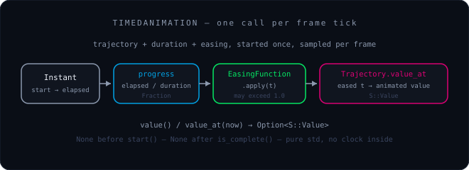
Lifecycle
#![allow(unused)]
fn main() {
use smearor_commons_animation::{Span, TimedAnimation, EasingFunction};
use smearor_commons_geometry::{Pixels, ScaleFactor};
use std::time::Duration;
let mut animation = TimedAnimation::new(
Span::new(ScaleFactor::new(1.0), ScaleFactor::new(1.5)),
Duration::from_millis(250),
EasingFunction::EaseOutCubic,
);
animation.value(); // None — not started yet
animation.start(); // captures Instant::now()
animation.value(); // Some(…) — eased position on the span
animation.is_complete(); // true once elapsed >= duration
animation.value(); // None — the animation is over
}start_at(instant) substitutes the clock — deterministic tests, or
aligning several animations to one tick. progress() /
progress_at(now) expose the raw Fraction when a consumer needs it
(e.g. drawing a countdown arc alongside the animated value).
Option is the state machine
value_at returns None before start() and None after
completion — a polling consumer needs no separate state tracking:
#![allow(unused)]
fn main() {
match animation.value() {
Some(value) => widget.apply(value),
None if animation.is_complete() => finish(),
None => {} // not started
}
}The gtk4 feature’s drive() wraps exactly this pattern in a widget
tick callback — see GTK Driver.
Trajectories
A Trajectory maps eased progress t to a value — the shape of an
animation’s output over time. Time lives in TimedAnimation; the
trajectory only knows how to answer value_at(t).

Span<T> — two endpoints
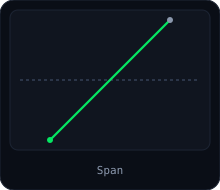
#![allow(unused)]
fn main() {
use smearor_commons_animation::{Span, Trajectory};
use smearor_commons_geometry::{Fraction, Pixels, Vec2};
let span = Span::new(0.0_f64, 100.0);
span.value_at(Fraction::HALF); // 50.0
// any Interpolate type — positions move both axes on one clock
let slide = Span::new(Vec2::<Pixels>::new(0.0, 0.0), Vec2::<Pixels>::new(320.0, 0.0));
}ThreePhaseSpan<T> — out, hold, back

new(from, mid, to, lead, trail): interpolates from → mid over
[0, lead), holds mid over [lead, trail], interpolates mid → to
over the rest.
ThreePhaseSpan<ScaleFactor> with from = to = 1.0 is the
zoom-during-rotation pattern; PulseAnimation is exactly that.
with_easing(lead_ease, trail_ease) shapes the interpolation
inside the lead and trail phases - the boundaries stay real time
fractions while each phase gets its own curve. Without it the outer
TimedAnimation easing warps the phase durations along with
everything else.
with_hold(hold_to, hold_ease) turns the hold into a drifting
phase: instead of sitting at mid it eases mid -> hold_to over
the hold duration - a slow settle or a breathing pause.
with_hold_mode(.., HoldMode::Pulse) mirrors the hold curve
0 -> 1 -> 0: the excursion peaks mid-hold and returns to mid -
an animation around the hold point that hands off cleanly to the
trail phase. Elastic as hold easing turns it into an
oscillation.
Keyframes<T> — the general case

(progress, value) pairs, piecewise-lerped, boundary values holding
outside the range. Span is two keys, ThreePhaseSpan is four —
every other shape is a special case of this one:
#![allow(unused)]
fn main() {
use smearor_commons_animation::{Keyframes, Trajectory};
use smearor_commons_geometry::Fraction;
let keys = Keyframes::new(
(Fraction::ZERO, 0.0_f64),
[(Fraction::new(0.3), 0.8), (Fraction::new(0.6), 0.2), (Fraction::ONE, 1.0)],
);
keys.value_at(Fraction::new(0.45)); // lerps between the two middle keys
}The first key is a separate argument — a Keyframes can never be
empty.
Repeat<S> — the same cycle, n times
Wraps an inner trajectory and plays it count times within the
duration — blinking, pulsing, loading indicators. Easing applies to
the whole sequence, not per cycle:
#![allow(unused)]
fn main() {
use smearor_commons_animation::{Repeat, Span};
let blink = Repeat::new(Span::new(0.0_f64, 1.0), 3); // three cycles
}Mirror<S> — yo-yo

0 → 0.5 plays inner forward, 0.5 → 1 plays it backward —
A → B → A on one clock. Mirror inside Repeat is a seamless
back-and-forth.
Delay<S> — choreography

Holds inner’s start value until progress delay, then plays the
inner trajectory compressed into the rest. In a tuple composite this
staggers the members: (Span<RotationRad>, Delay<Span<ScaleFactor>>)
rotates first, zooms after, on one clock.
Eased<S> — a local easing decorator

Eased::new(inner, easing) applies an EasingFunction to the
progress inside a trajectory — value_at(t) = inner.value_at(easing(t)). That frees easing from the clock:
TimedAnimation can run Linear while each component of a
composite animation (a tuple, a split axis) keeps its own curve.
#![allow(unused)]
fn main() {
use smearor_commons_animation::{Eased, EasingFunction, Span};
let bounced = Eased::new(Span::new(0.0, 1.0), EasingFunction::Bounce);
}Steps<T> — discrete values
values held in order, 1 / n progress each — no interpolation.
Typewriter reveals, frame animation. For stepping before the
trajectory sees the progress use EasingFunction::Steps instead.
BezierPath<P> — along a curve
The value is the point on the bezier through points at t —
evaluated by recursive de Casteljau. Two points give a line, three a
quadratic, four a cubic. Generic over the point type:
BezierPath<Vec2<Pixels>> animates along screen curves,
BezierPath<Vec3> sweeps a spatial path — any Interpolate point
works.
#![allow(unused)]
fn main() {
use smearor_commons_animation::{BezierPath, Trajectory};
use smearor_commons_geometry::{Fraction, Vec3};
let swoop = BezierPath::new(
Vec3::<()>::new(0.0, 0.0, 0.0),
[Vec3::new(1.0, 2.0, 1.0), Vec3::new(2.0, 0.0, 0.5)],
);
swoop.value_at(Fraction::HALF);
}Orbit<U> — circular laps

Orbit::new(center, radius) moves the value on a circle —
spinners, loading wheels. One lap by default; with_turns(n) runs
n revolutions per animation. Integer turns closes the curve, so
value_at(0) == value_at(1) — a seamless loop under
EasingFunction::Linear. Pair with Mirror for a partial swing.
#![allow(unused)]
fn main() {
use smearor_commons_animation::{Orbit, Trajectory};
use smearor_commons_geometry::{Fraction, Vec2};
let wheel = Orbit::new(Vec2::<()>::new(0.5, 0.5), 0.3).with_turns(2.0);
wheel.value_at(Fraction::new(0.25)); // south after half a lap
}Helix<U> — circular climb
Helix::new(center, radius, z_from, z_to) is the spatial cousin of
Orbit: the value winds around center while z interpolates
linearly — corkscrews, ascending paths. with_turns(n) adds
windings.
#![allow(unused)]
fn main() {
use smearor_commons_animation::{Helix, Trajectory};
use smearor_commons_geometry::{Fraction, Vec2};
let corkscrew = Helix::new(Vec2::<()>::new(0.0, 0.0), 0.5, 0.0, 1.0);
corkscrew.value_at(Fraction::HALF); // opposite point at z = 0.5
}Lissajous<U> — sinusoidal ratio figures
Lissajous::new(center, size, x_turns, y_turns) oscillates both
axes sinusoidally — 2:1 draws a figure eight, 3:2 a bow tie.
with_phase shifts the x wave and changes the handedness.
Integer ratios close the loop.
#![allow(unused)]
fn main() {
use smearor_commons_animation::{Lissajous, Trajectory};
use smearor_commons_geometry::Vec2;
use std::f64::consts::FRAC_PI_2;
let eight = Lissajous::new(Vec2::<()>::new(0.5, 0.5), 0.4, 2.0, 1.0)
.with_phase(FRAC_PI_2); // circle -> eight -> line
}Spiral<U> — winding out
Spiral::new(center, radius) circles the center while the radius
grows linearly from 0 to radius — with_turns sets the
windings.
PolygonPath<P> — edges in equal time

PolygonPath::new(vertices) travels a closed polygon — every
edge gets the same time share, corners stay corners. Generic like
BezierPath: PolygonPath<Vec3> walks a spatial polygon.
CatmullRom<P> — through every point

CatmullRom::new(points) draws the smooth spline that passes
through all its control points — unlike a bezier, every knob
lies on the curve. Same generic point type.
Lemniskate<U> — the canonical eight

Lemniskate::new(center, size) traces the Bernoulli lemniscate —
the classic infinity shape, smooth through its crossing.
SphericalOrbit<U> — a tilted lap
SphericalOrbit::new(center, radius, inclination) is Orbit with
the plane tilted by inclination radians — 0 is flat,
FRAC_PI_2 a vertical wheel swinging through z.
TorusKnot<U> — winding a torus

TorusKnot::new(center, radius, p, q) traces the (p,q) torus
knot — p winds around the axis, q threads the hole. Prime
pairs draw the interlaced classics, e.g. (2, 3) the trefoil.
Figure8<U> — an eight with depth
Figure8::new(center, size, depth) draws a Gerono lemniscate in
the x/y plane that also swings depth units along z — an
infinity loop diving forward.
Ellipse<U> — the oval lap
Ellipse::new(center, rx, ry) widens Orbit to independent
semi-axes; with_rotation tilts the axes, with_turns counts
laps.
Rose<U> — the rosette

Rose::new(center, size, petals) traces r = size·cos(k·θ) —
petals = 3 the trefoil rose, 4 an eight-leaf rosette.
with_phase rotates the figure.
Spiro<U> — the spirograph

Spiro::new(center, outer, inner, pen) rolls a wheel inner
inside outer while a pen pen units out draws stars and
blossoms - outer = 4·inner with pen = inner gives the
four-cusped astroid.
Superellipse<U> — exponent morphing
Superellipse::new(center, rx, ry, exponent) morphs with n:
2 is the ellipse, 2/3 the astroid, large n a squircle.
StarPath<P> — the star polygon

StarPath::new(vertices).with_step(k) is PolygonPath skipping
k vertices per edge - five points, step = 2: the pentagram.
WaveTrail<U> — travel with wobble
WaveTrail::new(from, to, amplitude, waves) moves from -> to
swaying perpendicular — a slalom across the field.
BouncePath<U> — hops that decay
BouncePath::new(from, to, height, hops, decay) hops parabolas
along the route, each decay smaller than the last.
ConicalHelix<U> — the tapering staircase
ConicalHelix::new(center, r_from, r_to, z_from, z_to) is Helix
with the radius growing or shrinking while it climbs — a spiral
staircase flaring into a cone.
Viviani<U> — a figure eight on a sphere
Viviani::new(center, radius) traces the intersection of sphere
and off-center cylinder — a closed lemniscate in space.
Mobius<U> — the one-sided edge

Mobius::new(center, radius, width) walks the single edge of a
Moebius strip — two ring revolutions to return, half a run flips
sides.
SphereLissajous<U> — weaving a ball
SphereLissajous::new(center, radius, lon, lat) oscillates
longitude and latitude in frequency ratio — woven basket coverage
of a sphere, closed for integer ratios.
Lorenz<U> — the strange attractor

Lorenz::new(center, size) integrates the classic chaotic system
at construction and walks the baked path — the butterfly. It does
not close; Mirror makes it loop-friendly.
Tuples — composite values on one clock
(A, B) implements Trajectory when both members do — a
rotate-while-zooming animation needs no dedicated struct:
#![allow(unused)]
fn main() {
use smearor_commons_animation::{Span, ThreePhaseSpan};
use smearor_commons_geometry::{RotationRad, ScaleFactor};
let trajectory = (
Span::new(RotationRad::ZERO, RotationRad::QUARTER_TURN),
ThreePhaseSpan::new(
ScaleFactor::new(1.0), ScaleFactor::new(0.85), ScaleFactor::new(1.0),
Fraction::new(0.3), Fraction::new(0.7),
),
);
// TimedAnimation<…>::value_at(t) → (RotationRad, ScaleFactor)
}Box<dyn Trajectory<Value = V>> implements Trajectory too — a UI
can let the user pick the shape at runtime and run it on the same
clock.
Ready-made aliases
| Alias | Type | For |
|---|---|---|
RotationAnimation | TimedAnimation<Span<RotationRad>> | tile/pose rotation |
ZoomAnimation | TimedAnimation<Span<ScaleFactor>> | plain zoom |
PulseAnimation | TimedAnimation<ThreePhaseSpan<ScaleFactor>> | out-hold-back |
Vec2Animation<U> | TimedAnimation<Span<Vec2<U>>> | position/size |
RotationZoomAnimation | TimedAnimation<(Span<RotationRad>, ThreePhaseSpan<ScaleFactor>)> | the rotate gesture’s full effect |
Fraction::clamped inside ThreePhaseSpan::new keeps
lead ≤ trail — phase order can not be inverted by accident.
Playground
cargo run -p smearor-commons-animation --features gtk4 --example playground
opens a GTK window that combines any trajectory with any easing —
parameters (overshoot, elastic amplitude/period, steps, bezier
control points, repeat count, delay) are sliders, and the easing
curve is drawn behind the animated value.
Interpolation
Interpolate is the value-level contract: interpolate(self, target, t) — where self lands at t = 0, target at t = 1. Span builds
its Trajectory impl on it; consumers can implement it for their own
value types.
Implementations
| Type | Semantics |
|---|---|
f64, f32 | plain lerp |
Pixels, Millimeters | lerp inside the newtype |
Degrees, Radians | lerp — scalar units, not rotations |
RotationRad | shortest arc, normalized into [0, 2π) |
ScaleFactor | ScaleFactor::lerp |
Vec2<U, T> | component-wise — both axes on one clock |
(A, B) | pair-wise — composite values |
t is not clamped
Easing curves like Overshoot deliberately produce t > 1.0, and each
type decides what extrapolation means:
- plain scalars just keep going past the target
RotationRadkeeps turning past the target on the shortest arc and settles back — an overshooting rotation swing, exactly what a spring-loaded tile feels like
Radians vs. RotationRad
A deliberate distinction from the geometry crate: Radians is a
scalar (angles as measurements — interpolate linearly, 30° → 390° is 360° of travel), while RotationRad is an orientation
(350° → 20° is +30° of travel across the wrap). Animating
orientations should always go through RotationRad.
Easing
EasingFunction maps linear time progress to eased progress —
apply(t) turns a constant-speed clock into acceleration curves. All
endpoints are fixed at (0, 0) and (1, 1); what happens between is
the curve’s personality.
#![allow(unused)]
fn main() {
use smearor_commons_animation::EasingFunction;
use smearor_commons_geometry::Fraction;
EasingFunction::Linear.apply(Fraction::HALF); // 0.5 — constant speed
EasingFunction::EaseOutCubic.apply(Fraction::HALF); // 0.875 — the arrive curve
EasingFunction::overshoot().apply(Fraction::HALF); // 0.5 — below 0 before, past 1 after
}The power family — Ease{In,Out,InOut} × {Quad,Cubic,Quart,Quint}
Each degree sharpens the curve; every variant comes in three directions:
- Quadratic:
EaseIn(t²),EaseOut,EaseInOut - Cubic:
EaseInCubic,EaseOutCubic— the classic “arrive” curve for camera and pose transitions —EaseInOutCubic - Quartic:
EaseInQuart,EaseOutQuart,EaseInOutQuart(t⁴) - Quintic:
EaseInQuint,EaseOutQuint,EaseInOutQuint(t⁵)
The trigonometric families
- Sine —
EaseInSine,EaseOutSine,EaseInOutSine: the gentlest curves - Exponential —
EaseInExpo,EaseOutExpo,EaseInOutExpo: near-frozen start, abrupt end - Circular —
EaseInCirc,EaseOutCirc,EaseInOutCirc: quarter-circle arcs
Beyond the endpoints
Overshoot { overshoot_amount }— Penner’s back-in-out:EasingFunction::overshoot()is the canonicals = 1.70158.BackIn/BackOut { overshoot_amount }— the two halves: dip below the start / overshoot the target.Elastic { amplitude, period }— oscillates around the target and settles; the springy classic.Bounce— decreasing parabolic bounces into the target.
Eased t exceeding [0, 1] is a feature, not a bug: see
Interpolation for how value types handle
extrapolation.
CubicBezier { x1, y1, x2, y2 } — CSS-compatible custom curves
The cubic-bezier() function from CSS, verbatim: y may exceed
0..1, x is clamped to it. CubicBezier { x1: 0.25, y1: 0.1, x2: 0.25, y2: 1.0 } is CSS ease; (0.42, 0.0, 0.58, 1.0) is
ease-in-out. Designers hand you four numbers — this variant runs
them.
Steps { steps, jump } — discrete easing
Quantizes the progress into steps jumps, CSS steps() compatible:
StepsJump::End jumps at each interval’s end (the last at t = 1),
StepsJump::Start at its start (the first at t = 0). For stepping
the value instead of the progress see trajectory::Steps.
Playground
cargo run -p smearor-commons-animation --features gtk4 --example playground
— pick a trajectory and an easing, tune overshoot, amplitude, period,
steps, bezier points and duration with sliders, watch the curve and
the animated value on the frame clock.
Rotation Snap
RotationSnap is the haptics-friendly part of the crate: it tracks a
rotate gesture’s cumulative angle and reports when the drag crosses
engagement and snap thresholds — so consumers snap a tile to the next
QuarterTurn without a state machine of their own.
Session lifecycle
#![allow(unused)]
fn main() {
use smearor_commons_animation::RotationSnap;
use smearor_commons_geometry::RotationRad;
// gesture begin: capture the tile's current rotation
let mut snap = RotationSnap::new(current_rotation);
// per gesture report — the cumulative angle since gesture begin
let update = snap.update(reported_angle);
if let Some(feedback) = update.feedback {
tile.rotation += feedback; // the 2° engagement nudge
}
if let Some(target) = update.target {
tile.snap_to(target); // QuarterTurn — gesture settles
}
// gesture end — restore the nudge if the drag never snapped
if let Some(restore) = snap.end() {
tile.rotation = restore;
}
}Three stages per drag
- Below
direction(default10°) — nothing happens; small wobbles are ignored. - Crossing
direction— the drag direction locks (clockwise vs. counter-clockwise) andSnapUpdate.feedbackemits a one-shot2°nudge in that direction — the “engagement” haptic. - Crossing
snap(default45°—Degrees::EIGHTH_TURN) —SnapUpdate.targetemits theQuarterTurnthe gesture settles on, computed viaQuarterTurn::snap_target(initial, direction). The session freezes; furtherupdate()s return emptySnapUpdates.
Both fields can fire in one update — a drag jumping straight past
the snap threshold still emits feedback first, preserving the
“nudge, then snap” order.
update() unwraps the 0°/360° boundary per report before
accumulating — raw gesture angles jump ±360° there while the drag
itself is continuous.
end() is the undo path
end() yields Some(initial) when the drag never snapped — restoring
initial also undoes the feedback nudge the consumer applied
mid-drag. It returns None once a snap target was emitted: nothing to
restore, the new quarter turn stays.
with_thresholds(initial, snap, direction, feedback) overrides all
three defaults (DEFAULT_SNAP, DEFAULT_DIRECTION,
DEFAULT_FEEDBACK) for consumers that want tighter or looser snapping.
GTK Driver
The gtk4 feature adds drive — the glue that samples a
TimedAnimation on a widget’s frame clock. The core stays std-pure;
only this one function depends on GTK.
#![allow(unused)]
fn main() {
use smearor_commons_animation::{RotationAnimation, drive};
use smearor_commons_geometry::{RotationRad, Span};
use gtk4::glib::ControlFlow;
use std::time::Duration;
let animation = RotationAnimation::new(
Span::new(RotationRad::ZERO, RotationRad::QUARTER_TURN),
Duration::from_millis(250),
EasingFunction::EaseOutCubic,
);
drive(&widget, animation, |widget, rotation| {
widget.imp().rotation.set(rotation);
widget.queue_allocate();
ControlFlow::Continue
});
}How it works
drive installs add_tick_callback on the widget: every frame it
samples animation.value() and calls apply(&widget, value).
value()returnsNone— the tick removes itself (ControlFlow::Break); that covers both “not started” and “completed”applyreturns aControlFlow—Continuekeeps sampling,Breakdetaches early (consumer-driven cancellation)is_complete()forcesBreakregardless ofapply’s answer, so a finished animation never keeps the tick aliveS::Value: Copy— values move into the closure by copy per frame
The widget owns the animation’s lifetime: dropping the widget detaches
the tick, and the animation needs no Rc/RefCell — drive moves it
into the callback.
The schemars feature separately adds JsonSchema derives for
EasingFunction, Span, ThreePhaseSpan and friends — animation
configs can travel through serialized state.
smearor-commons-layout
Tabletop layout primitives — arrangement vocabulary without domain
semantics. Consumers map “player”, “card” or “note” onto these
primitives; what a placed item is stays downstream. Everything is
unit-generic over the U marker of Vec2/Rect.
What’s inside
- TableSides & Seats —
TableSide,Seat, perimeter navigation, seat placement,SeatPose - Items & Placements —
LayoutItem,Placement,footprint_foraxis swaps - Strategies —
LayoutStrategy,FlowLayout,SeatLayout,AnchorWeights,DoesNotFit - Workspace & View —
WorkspaceSize, theViewcamera,physical_zoom
TableSide and Seat
TableSide names the four edges of a rectangular surface. Each side
defines the reading orientation of items placed in front of it:
graph LR
Bottom["Bottom (Deg0)"] -->|clockwise| Left["Left (Deg90)"]
Left -->|clockwise| Top["Top (Deg180)"]
Top -->|clockwise| Right["Right (Deg270)"]
Right -->|clockwise| Bottom
TableSide::clockwise/counter_clockwisestep exhaustively;TableSide::ALLiterates for round-robin distribution.TableSide::nearest(RotationRad)snaps a free rotation to a side;right_direction()/anchor_weights()support edge math.
A Seat is a TableSide plus an optional edge Fraction offset
(None = let the strategy distribute). perimeter_position() orders
seats along the table perimeter (clockwise, 0.0..4.0);
next_in/previous_in find the next occupied seat in a roster;
placement() positions a footprint in front of the seat;
fanned_placement() fills the free spot nearest the seat, reusing gaps
in the edge lane and allowing a lane behind the edge row.
Strategies
A LayoutStrategy maps LayoutItems onto Placements
(center + rotation + footprint) inside bounds — index-stable, so
placements[i] answers items[i]:
flowchart LR
items["LayoutItem list"] --> strategy{"LayoutStrategy"}
bounds["Rect bounds"] --> strategy
strategy -->|Ok| placements["Vec<Placement<U>>"]
strategy -->|DoesNotFit| err["LayoutError::DoesNotFit"]
FlowLayout— non-overlapping anchored rows (anchor,gap), wrapping to the next line at the far edge.SeatLayout— explicit seats win;SeatAssignment::RoundRobindistributes the rest overTableSide::ALL.
Overflow yields LayoutError::DoesNotFit — the consumer decides whether
to retry, shrink or leave items unarranged. footprint_for computes a
Placement’s displayed extent when an item changes orientation. See the
crate’s rustdoc for the full API.
TableSides & Seats
The crate’s core vocabulary: which edge of the table an item faces, and where along that edge it belongs.
TableSide
The four edges, tied to geometry’s QuarterTurn: Bottom = Deg0,
Left = Deg90, Top = Deg180, Right = Deg270 — each side owns
a 90° sector centered on its orientation.
#![allow(unused)]
fn main() {
use smearor_commons_layout::TableSide;
use smearor_commons_geometry::{RotationRad, Vec2};
TableSide::ALL; // [Bottom, Left, Top, Right] — clockwise
TableSide::Bottom.clockwise(); // Left
TableSide::Left.to_quarter_turn(); // QuarterTurn::Deg90
TableSide::Left.right_direction::<()>(); // Vec2(1.0, 0.0) — reading direction
// snap helpers — orientation and position variants
TableSide::nearest(RotationRad::new(0.6)); // Left (34° → 90° sector)
TableSide::nearest_edge(marker_pos, table_bounds); // closest edge by distance
}nearest resolves exact sector boundaries (45°/135°/…) to the
clockwise-next side; nearest_edge derives a side from a physical
position — ties resolve to Bottom first, in ALL order.
anchor_weights() translates a side into the matching
AnchorWeights corner for flow-style anchoring.
Seat — side plus optional edge offset
#![allow(unused)]
fn main() {
use smearor_commons_layout::Seat;
use smearor_commons_geometry::Fraction;
Seat::new(TableSide::Left); // side only — strategy distributes
Seat::at(TableSide::Bottom, Fraction::new(0.3)); // pinned 30% along the edge
Seat::center(TableSide::Top); // pinned at HALF
}offset is None or Some(Fraction) (0.0 = edge start). The None
case matters: it says “assigned to this side, spread me with the
others” rather than “center me”.
Perimeter navigation
perimeter_position() maps a seat to 0.0..4.0 — the bottom edge
0..1 (right-to-left), left 1..2 (bottom-to-top), top 2..3
(left-to-right), right 3..4 (top-to-bottom). Continuous at the
corners, so next_in/previous_in walk a roster clockwise and
counter-clockwise, skipping empty sides.
Placement in front of a seat
#![allow(unused)]
fn main() {
seat.placement(bounds, footprint, margin)
// centered on the seat's edge position, `margin` off the edge,
// rotated to the side's quarter turn
seat.fanned_placement(bounds, footprint, margin, &taken, gap)
// like placement(), but picks the free spot nearest the seat —
// reuses gaps in the edge lane, may land a row behind when the
// lane is full
}SeatPose — a seat with a face
Seat { side, offset } says where; SeatPose { seat, orientation: RotationRad } adds which way the user faces — a free angle, not
snapped to the side’s quarter turn. It offers the same navigation
(perimeter_position, next_in, placement, fanned_placement), so
consumers that model users-as-poses get identical ergonomics.
Wire note: Seat/SeatPose deliberately have no zvariant impl —
Option<Fraction> has no D-Bus signature. They travel as (TableSide, f64) / (TableSide, f64, f64) triples with NaN for the unpinned
offset.
Items & Placements
The two data structs on either side of LayoutStrategy::arrange —
what goes in, what comes out.
LayoutItem — the request
#![allow(unused)]
fn main() {
use smearor_commons_layout::{LayoutItem, Seat, TableSide};
use smearor_commons_geometry::{Rotation, RotationRad, Vec2};
let item = LayoutItem::new(
Vec2::new(60.0, 40.0), // footprint extent (rotated bbox)
Rotation::Free(RotationRad::new(0.4)),
).with_seat(Seat::new(TableSide::Left));
}size: Vec2— the item’s footprint as currently rotatedrotation: Rotation—QuarterTurn(_)orFree(_); strategies may preserve it (Flow) or override it (Seat)seat: Option<Seat>— explicit seat request;Noneleaves the decision to the strategy
Placement — the answer
#![allow(unused)]
fn main() {
pub struct Placement<U, T = f64> {
pub center: Vec2<U, T>, // where inside bounds
pub rotation: Rotation, // orientation to render at
pub size: Vec2<U, T>, // footprint at that rotation
}
}The size is the footprint at the placement’s own rotation — a
seat-facing item rotated 90° reports h×w, not w×h.
footprint_for — honest about quarter turns
#![allow(unused)]
fn main() {
use smearor_commons_layout::footprint_for;
footprint_for(Vec2::new(60.0, 40.0), rotation, QuarterTurn::Deg90);
// Vec2(40.0, 60.0) — quarter turns swap the axes exactly
}Quarter turns are exact (w×h ↔ h×w); a Free source rotation
can’t be inverted from its bounding box, so its footprint is
approximated as the unrotated extent. Strategies use this when an item
changes orientation on the way to its placement — a SeatLayout
placing an upright 60×40 item at the Left seat knows it occupies
40×60 along the edge.
Strategies
LayoutStrategy<U> is the contract — a pure function mapping
LayoutItems onto Placements inside bounds. Strategies see
footprints, never widgets or domain objects, so any crate can
implement one and hand it to a shared caller.
#![allow(unused)]
fn main() {
pub trait LayoutStrategy<U> {
fn arrange(&self, bounds: Rect<U>, items: &[LayoutItem<U>])
-> Result<Vec<Placement<U>>, LayoutError>;
}
}Index-stable: placements[i] answers items[i] — the caller maps
back by position. Everything is unit-generic over U: the same
strategy arranges a pixel canvas or a physical millimeter table.
FlowLayout — anchored rows
#![allow(unused)]
fn main() {
use smearor_commons_layout::{AnchorWeights, FlowLayout};
let flow = FlowLayout {
anchor: AnchorWeights::TOP_LEFT, // corner the flow starts from
gap: 24.0, // between items and between lines
wrap: true, // wrap to the next line at the far edge
};
// Default::default() → TOP_LEFT, gap 24, wrap on
}Non-overlapping rows starting at anchor — horizontal picks the
item direction, vertical the line direction. wrap = false means a
single line; an overflowing item reports DoesNotFit. The item’s own
rotation is preserved.
SeatLayout — around the table
#![allow(unused)]
fn main() {
use smearor_commons_layout::SeatLayout;
let seats = SeatLayout {
assignment: SeatAssignment::RoundRobin, // for items without a seat
edge_margin: 24.0, // distance off the table edge
gap: 24.0, // between items on one side
};
}Per side: pinned seats (Seat::at) take their exact offset;
unpinned items spread along the edge centered as a group, each
edge_margin off the edge, rotated to the side’s orientation —
footprints computed via footprint_for at the target quarter turn.
A spread group wider than its edge reports DoesNotFit.
SeatAssignment::RoundRobin distributes items without a seat over
TableSide::ALL in input order — item i lands on ALL[i % 4].
AnchorWeights — the 9-point grid
#![allow(unused)]
fn main() {
AnchorWeights::TOP_LEFT; // horizontal 0.0, vertical 0.0
AnchorWeights::CENTER; // 0.5 / 0.5
AnchorWeights::BOTTOM_RIGHT; // 1.0 / 1.0
}Two Fractions selecting one of nine anchors — corners, edge centers
and center. TableSide::anchor_weights() maps a side to its
matching anchor for consumers that blend flow and seat semantics.
LayoutError::DoesNotFit
#![allow(unused)]
fn main() {
#[error("item {index} of {items} does not fit inside the bounds")]
DoesNotFit { index: usize, items: usize }
}The strategy reports the first item that failed; the consumer decides the reaction — retry with different options, shrink items, or leave the overflow unarranged. Layout never silently overlaps.
Workspace & View
Two separate concerns the crate keeps distinct: how big the item
world is (WorkspaceSize), and which part of it the widget shows
(View).
WorkspaceSize<U> — how big is the table
#![allow(unused)]
fn main() {
use smearor_commons_layout::WorkspaceSize;
WorkspaceSize::FollowWidget; // workspace == widget allocation (default)
WorkspaceSize::Fixed(Vec2::new(1920.0, 1080.0)); // fixed extent, origin (0,0)
WorkspaceSize::Infinite; // unbounded — items may live anywhere
}extent(widget_extent) resolves to Option<Rect> — Infinite yields
None. With no edge to clamp against, consumers typically clamp to
the visible View region so items can’t be lost off-screen.
View<U> — the camera
View is region: Rect<U> (the workspace area requested visible)
plus rotation: RotationRad (the workspace’s rotation on screen —
at a multi-user table, rotating the view is walking around the
table while seats and items stay anchored to the workspace).
#![allow(unused)]
fn main() {
use smearor_commons_layout::View;
use smearor_commons_geometry::{Pixels, Rect, ScaleFactor, Vec2};
let mut view = View::covering(Rect::from_xywh(0.0, 0.0, 1920.0, 1080.0));
view.pan(Vec2::new(40.0, 0.0)); // shift the shown region
view.zoom_at(cursor, ScaleFactor::new(2.0)); // zoom-to-point: cursor stays put
view.rotate_around(pivot, RotationRad::QUARTER_TURN); // turn the table on screen
view.shown_region(widget_size); // region grown (never shrunk) to widget aspect
view.to_widget(point, widget_rect); // workspace → widget pixels
view.to_workspace(point, widget_rect); // widget pixels → workspace
}shown_region— when region and widget aspect differ, the region is grown to match: zooming out never hides items the user asked to seezoom_at(anchor, 2.0)— halves the shown region aroundanchor; the anchor keeps its widget positionto_widget/to_workspace— the two-direction point mapping every hit-test and draw pass needs
physical_zoom — real millimeters
#![allow(unused)]
fn main() {
let zoom = physical_zoom(monitor_dpi); // → PixelsPerMm
}For View<Millimeters> workspaces: dpi comes from GdkMonitor
(width_mm/height_mm + pixel geometry) or a calibration override —
a physical object laid on the table renders true-size. Meaningless for
pixel workspaces.
smearor-commons-layer
Layer-shell vocabulary: SmearorLayer is the shared name for the four
layer-shell layers (Background, Bottom, Top, Overlay). It parses
from CLI arguments (FromStr), deserializes from configuration files
(serde) and converts into gtk4_layer_shell::Layer behind the
gtk4-layer-shell feature. ParseLayerError reports unknown names.
What’s inside
- Layers — the four variants, strict
FromStrvs. lenientFrom<&str>, serde aliases,ParseLayerError - LayerConfig — the config quartet, exclusive-zone
semantics,
merge(),effective_exclusive_zone() - Edges —
EdgeOfmappingQuarterTurn,RotationandTableSideonto layer-shell anchor edges
LayerConfig is the config quartet apps repeat across arguments, files
and state: layer, namespace, monitor and exclusive_zone
(None = auto-exclusive-zone, 0 = overlay mode).
merge() applies overrides; effective_exclusive_zone() resolves the
value to apply.
Orientation to edge
With gtk4-layer-shell enabled, EdgeOf maps the snapped
four-orientation vocabularies — geometry’s QuarterTurn/Rotation and,
behind the layout feature, layout’s TableSide — onto the
layer-shell Edge a surface anchors to:
flowchart LR
cli["CLI args (FromStr)"] --> sl[SmearorLayer]
file["config file (serde)"] --> lc[LayerConfig]
sl -->|"gtk4-layer-shell"| layer["gtk4_layer_shell::Layer"]
orient["QuarterTurn / Rotation / TableSide"] -->|EdgeOf| edge["gtk4_layer_shell::Edge"]
lc --> zone["exclusive_zone: Pixels<i32>"]
See the crate’s rustdoc for the full API.
Layers
SmearorLayer is the shared name for the four layer-shell layers —
the stack every Smearor surface lives in, from desktop background to
overlay.
The four variants
#![allow(unused)]
fn main() {
use smearor_commons_layer::SmearorLayer;
SmearorLayer::Background; // beneath everything, on the wallpaper level
SmearorLayer::Bottom; // above background, beneath regular windows
SmearorLayer::Top; // above regular windows — #[default]
SmearorLayer::Overlay; // above everything else
}Two parsers, deliberately different
#![allow(unused)]
fn main() {
use std::str::FromStr;
// strict — CLI arguments: unknown names are an error
"overlay".parse::<SmearorLayer>(); // Ok(Overlay)
"OverLay".parse::<SmearorLayer>(); // Ok — case-insensitive
"mid".parse::<SmearorLayer>(); // Err(ParseLayerError { input: "mid" })
// lenient — the config→CLI bridge: unknown values must not fail
SmearorLayer::from("mid"); // Top (the #[default] fallback)
}FromStr rejects unknown input with ParseLayerError —
"invalid layer '{input}': expected background, bottom, top or overlay".
From<&str> is the lenient counterpart used where a configuration
value feeds a CLI argument: it falls back to Top rather than fail.
Config files deserialize through serde with lowercase/Title/UPPER
aliases per variant — layer = "overlay" works in TOML regardless of
the author’s capitalization habit.
To the backend
Behind gtk4-layer-shell, From<SmearorLayer> for gtk4_layer_shell::Layer converts one-to-one — Background →
Layer::Background, Bottom → Layer::Bottom, Top → Layer::Top,
Overlay → Layer::Overlay. The shared vocabulary never carries a
GTK dependency itself.
LayerConfig
LayerConfig is the layer/namespace/monitor/exclusive_zone
quartet Smearor apps repeat across CLI arguments, configuration files
and runtime state. All fields are Option with #[serde(default)] —
an empty {} deserializes cleanly.
The quartet
#![allow(unused)]
fn main() {
use smearor_commons_layer::{LayerConfig, SmearorLayer};
use smearor_commons_geometry::Pixels;
let config = LayerConfig {
layer: Some(SmearorLayer::Overlay), // None → compositor's default layer
namespace: Some("smearor".into()), // compositor window rules match on it
monitor: Some(0), // None → primary monitor
exclusive_zone: Some(Pixels::new(0)), // see below
};
}Consumers needing extra fields wrap it with #[serde(flatten)] on a
LayerConfig member — the quartet rides inside their own config
struct.
exclusive_zone semantics
| Value | Effect |
|---|---|
None | auto exclusive zone — the compositor decides |
Some(0) | overlay mode — reserve nothing, float above |
Some(n) | reserve n pixels at the surface’s anchor edge |
i32-backed because gtk4_layer_shell consumes i32; serde keeps
the bare-number wire format (exclusive_zone = 64 in TOML).
effective_exclusive_zone()
The zone only applies when a layer is selected — a surface on the compositor’s default layer is a regular window, not a layer surface:
#![allow(unused)]
fn main() {
LayerConfig { exclusive_zone: Some(Pixels::new(64)), ..Default::default() }
.effective_exclusive_zone(); // None — no layer set
}merge() — CLI over config
#![allow(unused)]
fn main() {
let effective = config.merge(&cli_args);
}Every Some field in overrides replaces the local value; None
never clears — Option fields can’t distinguish “unset” from
“explicitly unset”, so a CLI that doesn’t mention --monitor keeps
the config file’s monitor instead of wiping it. This is the
CLI-over-config pattern Smearor apps apply between their config file
and their argument parser.
Edges
EdgeOf — behind gtk4-layer-shell — maps the workspace’s snapped
four-orientation vocabularies onto the gtk4_layer_shell::Edge a
layer surface anchors to. It replaces per-app match tables and
float-epsilon angle comparisons.
#![allow(unused)]
fn main() {
pub trait EdgeOf {
fn edge(self) -> Option<Edge>;
}
}QuarterTurn — always an edge
Deg0 → Bottom, Deg90 → Left, Deg180 → Top, Deg270 →
Right: the quarter turn a seated user faces is the edge their
surfaces anchor to — the same mapping TableSide expresses by name.
TableSide — same-named edges
Behind the layout feature: Bottom → Edge::Bottom, Left →
Edge::Left, Top → Edge::Top, Right → Edge::Right. A seat
picked through layout vocabulary anchors its layer surface on the
matching compositor edge without translation tables.
Rotation — only when snapped
Rotation is a union of QuarterTurn and Free(RotationRad).
edge() delegates to quarter_turn(): snapped rotations return
Some(edge), free angles return None — a Rotation::Free(45°) has
no edge to anchor to, and the type system makes that an explicit
decision rather than an epsilon bug.
#![allow(unused)]
fn main() {
use smearor_commons_layer::EdgeOf;
use smearor_commons_geometry::{Rotation, RotationRad, QuarterTurn};
Rotation::QuarterTurn(QuarterTurn::Deg270).edge(); // Some(Edge::Right)
Rotation::Free(RotationRad::from_degrees(45.0)).edge(); // None
}Feature gates
| Impl | Requires |
|---|---|
QuarterTurn | gtk4-layer-shell |
Rotation | gtk4-layer-shell |
TableSide | gtk4-layer-shell + layout |
The From<SmearorLayer> for Layer conversion rides on the same
gtk4-layer-shell gate — the crate stays pure std + serde
without it.
License
MIT License
Copyright (c) 2026 Smearor
Permission is hereby granted, free of charge, to any person obtaining a copy of this software and associated documentation files (the “Software”), to deal in the Software without restriction, including without limitation the rights to use, copy, modify, merge, publish, distribute, sublicense, and/or sell copies of the Software, and to permit persons to whom the Software is furnished to do so, subject to the following conditions:
The above copyright notice and this permission notice shall be included in all copies or substantial portions of the Software.
THE SOFTWARE IS PROVIDED “AS IS”, WITHOUT WARRANTY OF ANY KIND, EXPRESS OR IMPLIED, INCLUDING BUT NOT LIMITED TO THE WARRANTIES OF MERCHANTABILITY, FITNESS FOR A PARTICULAR PURPOSE AND NONINFRINGEMENT. IN NO EVENT SHALL THE AUTHORS OR COPYRIGHT HOLDERS BE LIABLE FOR ANY CLAIM, DAMAGES OR OTHER LIABILITY, WHETHER IN AN ACTION OF CONTRACT, TORT OR OTHERWISE, ARISING FROM, OUT OF OR IN CONNECTION WITH THE SOFTWARE OR THE USE OR OTHER DEALINGS IN THE SOFTWARE.
Code of Conduct
Contributor Covenant Code of Conduct
Our Pledge
We as members, contributors, and leaders pledge to make participation in our community a harassment-free experience for everyone, regardless of age, body size, visible or invisible disability, ethnicity, sex characteristics, gender identity and expression, level of experience, education, socio-economic status, nationality, personal appearance, race, caste, color, religion, or sexual identity and orientation.
We pledge to act and interact in ways that contribute to an open, welcoming, diverse, inclusive, and healthy community.
Our Standards
Examples of behavior that contributes to a positive environment for our community include:
- Demonstrating empathy and kindness toward other people
- Being respectful of differing opinions, viewpoints, and experiences
- Giving and gracefully accepting constructive feedback
- Accepting responsibility and apologizing to those affected by our mistakes, and learning from the experience
- Focusing on what is best not just for us as individuals, but for the overall community
Examples of unacceptable behavior include:
- The use of sexualized language or imagery, and sexual attention or advances of any kind
- Trolling, insulting or derogatory comments, and personal or political attacks
- Public or private harassment
- Publishing others’ private information, such as a physical or email address, without their explicit permission
- Other conduct which could reasonably be considered inappropriate in a professional setting
Enforcement Responsibilities
Community leaders are responsible for clarifying and enforcing our standards of acceptable behavior and will take appropriate and fair corrective action in response to any behavior that they deem inappropriate, threatening, offensive, or harmful.
Community leaders have the right and responsibility to remove, edit, or reject comments, commits, code, wiki edits, issues, and other contributions that are not aligned to this Code of Conduct, and will communicate reasons for moderation decisions when appropriate.
Scope
This Code of Conduct applies within all community spaces, and also applies when an individual is officially representing the community in public spaces. Examples of representing our community include using an official email address, posting via an official social media account, or acting as an appointed representative at an online or offline event.
Enforcement
Instances of abusive, harassing, or otherwise unacceptable behavior may be reported to the community leaders responsible for enforcement at hanack@nooblounge.net.
All complaints will be reviewed and investigated promptly and fairly.
All community leaders are obligated to respect the privacy and security of the reporter of any incident.
Enforcement Guidelines
Community leaders will follow these Community Impact Guidelines in determining the consequences for any action they deem in violation of this Code of Conduct:
1. Correction
Community Impact: Use of inappropriate language or other behavior deemed unprofessional or unwelcome in the community.
Consequence: A private, written warning from community leaders, providing clarity around the nature of the violation and an explanation of why the behavior was inappropriate. A public apology may be requested.
2. Warning
Community Impact: A violation through a single incident or series of actions.
Consequence: A warning with consequences for continued behavior. No interaction with the people involved, including unsolicited interaction with those enforcing the Code of Conduct, for a specified period of time. This includes avoiding interactions in community spaces as well as external channels like social media. Violating these terms may lead to a temporary or permanent ban.
3. Temporary Ban
Community Impact: A serious violation of community standards, including sustained inappropriate behavior.
Consequence: A temporary ban from any sort of interaction or public communication with the community for a specified period of time. No public or private interaction with the people involved, including unsolicited interaction with those enforcing the Code of Conduct, is allowed during this period. Violating these terms may lead to a permanent ban.
4. Permanent Ban
Community Impact: Demonstrating a pattern of violation of community standards, including sustained inappropriate behavior, harassment of an individual, or aggression toward or disparagement of classes of individuals.
Consequence: A permanent ban from any sort of public interaction within the community.
Attribution
This Code of Conduct is adapted from the Contributor Covenant, version 2.1, available at https://www.contributor-covenant.org/version/2/1/code_of_conduct.html.
Community Impact Guidelines were inspired by Mozilla’s code of conduct enforcement ladder.
For answers to common questions about this code of conduct, see the FAQ at https://www.contributor-covenant.org/faq. Translations are available at https://www.contributor-covenant.org/translations.
Security
Security Policy
Supported Versions
The project is in early development (0.x). Security fixes land on the
main branch only; there are no maintained release branches yet.
Reporting a Vulnerability
Please report security issues privately:
- Email: hanack@nooblounge.net
- Or open a private security advisory on GitHub (Security → Advisories → “Report a vulnerability”)
Please do not file public issues for vulnerabilities. We aim to acknowledge reports within a few days and to coordinate a fix and disclosure timeline with you.